1 Úvod
Tato příručka vám ukáže, jak v olomolu udělat to, co při kreslení chemie potřebujete: nakreslit molekulu nebo mechanismus se zahnutými šipkami, hezky je uspořádat a dostat do Wordu, PowerPointu nebo Inkscapu. Kapitoly jsou seřazené podle úkolů, ne podle tlačítek, takže můžete rovnou nalistovat to, co právě řešíte. Pokud program vidíte poprvé, začněte krátkým Rychlým startem. Kdo chce vědět, jak je program postavený uvnitř, najde to v příloze (příloha A).
Názvy tlačítek a nabídek jsou napsané takhle a odpovídají přesně tomu, co uvidíte na obrazovce, když je program v češtině. Klávesy vypadají takhle: Ctrl+Z. Na Macu místo Ctrl použijte Cmd.
1.1 Co je olomol
olomol je bezplatný kreslicí program pro chemii, který běží celý ve webovém prohlížeči. Vznikl pro výuku jako náhrada za ChemSketch. Kreslí struktury, reakční schémata a mechanismy s volnými elektronovými páry a zahnutými šipkami a exportuje čisté obrázky pro protokoly, diplomové práce a prezentace.
- Nic se neinstaluje. Stačí Chrome, Edge nebo Firefox, ve Windows, na Macu i v Linuxu. Kdo chce, může si ho nainstalovat jako aplikaci (oddíl 10.1).
- Kresby zůstávají u vás. Program nemá účty ani server, kam by se kresby ukládaly. Ven se něco pošle, jen když o to sami požádáte: hledání názvu v databázi PubChem pošle napsaný název a odkaz na kresbu nese kresbu v sobě.
- Chemie je opravdová. Program ví, kolik má atom vodíků a volných párů, počítá vzorec, hmotnosti a identifikátory a hlídá, aby úprava kresby nezměnila molekulu. Výpočty dělají knihovny RDKit, Indigo a OpenChemLib přímo ve vašem počítači.
1.2 Otevření
Poprvé se stránka načítá o něco déle a pruh ukazuje, kolik zbývá. Chemické knihovny se stahují, až když jsou poprvé potřeba (můžete vidět třeba Načítám chemickou knihovnu (RDKit)…). Potom už zůstanou v počítači a program funguje i bez internetu.
1.3 Okno
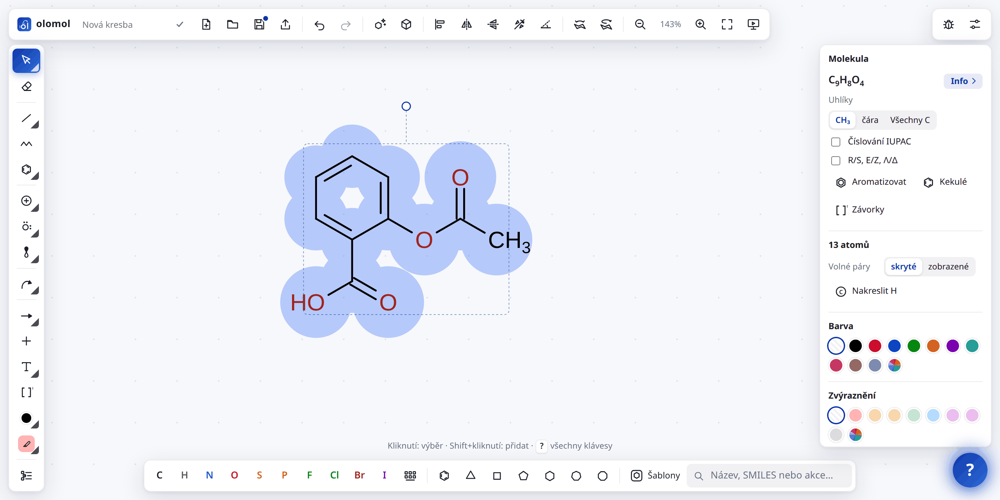
- Horní lišta, ve skupinách: název kresby a Uchováno, nová kresba
 , otevřít , uložit
, otevřít , uložit  , Export | zpět a znovu
, Export | zpět a znovu  | Překreslit, Otočit ve 3D
| Překreslit, Otočit ve 3D  | Zarovnat, překlopení , Vodorovně / svisle
| Zarovnat, překlopení , Vodorovně / svisle  | překlopení a otočení židličky
| překlopení a otočení židličky 
 | zvětšení,
| zvětšení,  a Promítat . V úzkém okně se skupiny, které se nevejdou, schovají pod na konci lišty. Při dvou a více kresbách jsou pod ní karty (oddíl 8.2).
a Promítat . V úzkém okně se skupiny, které se nevejdou, schovají pod na konci lišty. Při dvou a více kresbách jsou pod ní karty (oddíl 8.2). - Kreslicí nástroje. Trojúhelníček v rohu tlačítka znamená, že má další varianty: nechte myš chvíli na tlačítku, klikněte na trojúhelníček, nebo znovu na zvolený nástroj. Dole otevírá panel Objekty (oddíl 2.9).
- Dolní lišta: prvky, periodická tabulka
 , kruhy, Šablony a vyhledávací řádek (oddíl 3.5).
, kruhy, Šablony a vyhledávací řádek (oddíl 3.5).
- Panel s vlastnostmi toho, co je právě vybrané (oddíl 2.15).
- Nápověda k právě zvolenému nástroji. Klávesa ? ukáže všechny klávesové zkratky.
- Nahlášení problému
 (oddíl 10.3) a nastavení
(oddíl 10.3) a nastavení 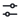
: vzhled kresby, jazyk, vzhled okna a ladicí režim (kapitola 9).
1.4 Nápověda a příklady
Když na tlačítko najedete myší a chvíli počkáte, objeví se popisek se vším, co dělá, i s klávesovou zkratkou. Řádek s nápovědou nad dolní lištou se mění podle zvoleného nástroje, takže stojí za to na něj mrknout, kdykoli vás nástroj překvapí. Kde je v horní liště místo, mají tlačítka i popisky; v užším okně je ztratí, nejdřív Otočit ve 3D.
Pravé tlačítko myši na plátně otevře nabídku toho, co se dá dělat s tím, na co ukazujete: vyjmout, kopírovat, vložit, smazat, Překreslit, Otočit ve 3D, překlopení, vazbu vodorovně nebo svisle, Zkratkou, Jedna sloučenina, Seskupit… Pravé tlačítko na molekule ji nejdřív vybere, stejně jako dvojklik. Na prázdném plátně nabídne vložení, výběr všeho, zobrazení a Promítat. Každá položka dělá totéž co její tlačítko nebo klávesa, a ta je napsaná vedle.
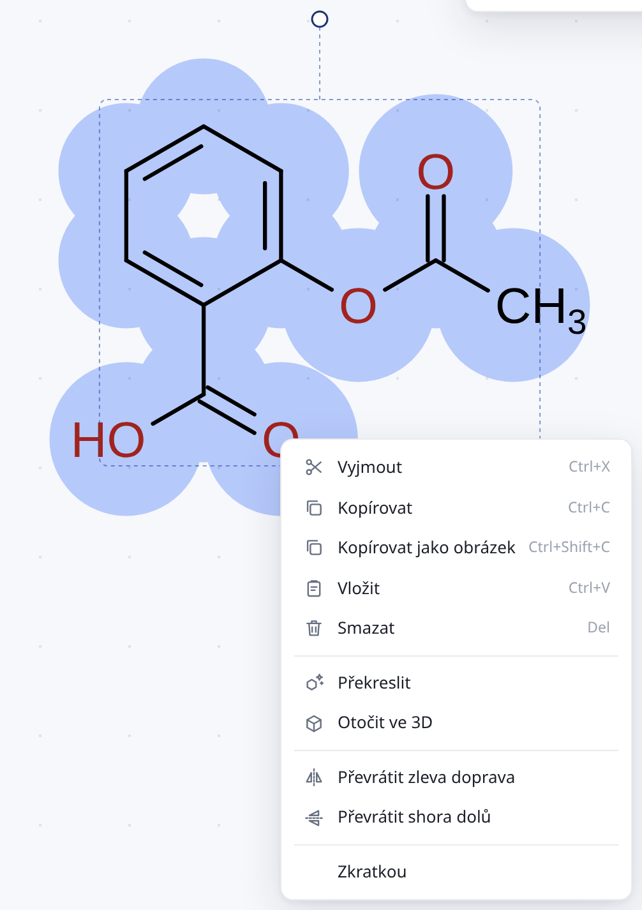
Kulaté tlačítko  vpravo dole otevře nápovědu, nejrychlejší cestu k tomu, jak se co dělá. Je v ní asi třicet hotových kreseb, ukázaných jako malé obrázky. Štítky jako Mechanismy, Stereochemie, Texty nebo Soubory a karty seznam zúží.
vpravo dole otevře nápovědu, nejrychlejší cestu k tomu, jak se co dělá. Je v ní asi třicet hotových kreseb, ukázaných jako malé obrázky. Štítky jako Mechanismy, Stereochemie, Texty nebo Soubory a karty seznam zúží.
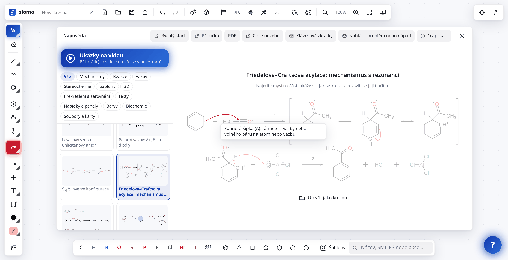
- Vyberte příklad a ukažte myší na kteroukoli jeho část: popisek řekne, jak se kreslí, a tlačítko, které k tomu slouží, se v lištách programu rozsvítí.
- Co myší ukázat nejde (Překreslit, Šablony, Zarovnat), je jako postup vypsané pod kresbou.
- Otevřít jako kresbu udělá z příkladu vaši kresbu, kterou si můžete prohlédnout zblízka nebo změnit. Ctrl+Z vrátí to, co jste měli předtím.
Nad štítky otevře Ukázky na videu v nové kartě stránku o programu s pěti krátkými videi z práce v programu: mechanismus, reakční schéma, molekula stavěná po krocích a překreslená jen zčásti, komplex otočený ve 3D a Haworthova projekce glukosy změněná na židličku, překlopená a otočená ve 3D.
V záhlaví okna nápovědy je Rychlý start (PDF), tato Příručka na webu a vedle ní PDF k tisku, Co je nového se změnami v každé verzi, Klávesové zkratky, Nahlásit problém nebo nápad (oddíl 10.3, také brouk  vpravo nahoře) a O aplikaci s poděkováním a licencemi. Co je nového a O aplikaci jsou také pod verzí vlevo dole.
vpravo nahoře) a O aplikaci s poděkováním a licencemi. Co je nového a O aplikaci jsou také pod verzí vlevo dole.
1.5 Kresba se ukládá sama
Nemusíte se bát, že o kresbu přijdete. Prohlížeč si ji pamatuje sám, chvilku po každé změně, takže klidně zavřete okno nebo vypněte počítač a kresba na vás počká, až se vrátíte. Ukazuje to značka vedle jejího názvu: hned po změně Uchovává se…, potom Uchováno.
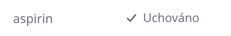
Takhle se uchovává každá otevřená kresba, takže až olomol příště otevřete, budou zpátky všechny, každá ve své kartě (oddíl 8.2). Platí to v tomto prohlížeči na tomto počítači. Chcete-li kresbu přenést na jiný počítač nebo ji někomu poslat, uložte ji do souboru tlačítkem Uložit (Ctrl+S, kapitola 8). Soubor je také nejjistější domov pro práci, na které vám hodně záleží, protože zůstane, i když se data prohlížeče vymažou.
Dřívější verze. Během kreslení si prohlížeč uchovává i dřívější verze kresby, po několika minutách. Klikněte na značku (Uchováno) nebo na Otevřít → Dřívější verze této kresby… a okno je ukáže jako obrázky, nejnovější nahoře; Vrátit dá vybranou na plátno a Ctrl+Z vrátí kresbu, kterou jste měli. Zavřením kresby se její dřívější verze zapomenou.
Značka varuje ve dvou případech. Neuchováno znamená, že tento prohlížeč nic neuchová, například v anonymním okně nebo při plném úložišti: než okno zavřete, uložte si kresbu do souboru. Jiná karta znamená, že olomol je otevřený i v další kartě a ta mezitím uchovala svou kresbu. Příště se vrátí ta naposledy změněná, takže na jistotu si tuto kresbu uložte. Kresba otevřená v jednom okně olomolu zůstane v něm: druhé okno ji už neotevře, takže se dvě okna nikdy navzájem nepřepíšou.
Tlačítko  začne novou kresbu v nové kartě a dosavadní kresba zůstane ve své. Na prázdném plátně je bledá ukázka, pokaždé jiná ze čtyř. Najeďte myší na její část a dozvíte se, jak se kreslí; její tlačítko se rozsvítí červeně.
začne novou kresbu v nové kartě a dosavadní kresba zůstane ve své. Na prázdném plátně je bledá ukázka, pokaždé jiná ze čtyř. Najeďte myší na její část a dozvíte se, jak se kreslí; její tlačítko se rozsvítí červeně.
Vlevo nahoře vedle loga je název kresby. Nová kresba ho ještě nemá (šedé Nová kresba); její soubory se nabídnou pod jménem drawing- s datem a časem, takže se navzájem nepřepíšou. Klikněte na název a přepište ho; podle něj se jmenují uložené soubory. Při dvou a více kresbách je název na kartě kresby a přejmenuje se dvojklikem na ni.
1.6 Posun a zvětšení
Zvětšit a zmenšit můžete pomocí Ctrl + kolečko nebo lupami nahoře. Procenta mezi nimi vrátí 100 %. Tlačítko  ukáže celou kresbu; s výběrem ho vystředí a přiblíží, až vyplní okno, což se hodí při práci na detailu.
ukáže celou kresbu; s výběrem ho vystředí a přiblíží, až vyplní okno, což se hodí při práci na detailu.
Posunout plátno můžete kolečkem myši (se Shift do stran), tažením se stisknutým mezerníkem, nebo tažením prostředním tlačítkem myši.
2 Kreslení struktur
2.1 Vazby a atomy
Všechno začíná jednoduchou vazbou  , která je při spuštění už zvolená.
, která je při spuštění už zvolená.
- Klikněte na prázdné plátno: vznikne první vazba.
- Klikněte na atom: přiroste nová vazba. Program sám zvolí rozumný směr, cik-cak a do největší mezery; řetězec vede napříč stránkou. Se Shift půjde vazba na druhou stranu (na druhé nejlepší místo), takže se řetězec může stočit opačně.
- Táhněte z atomu: vytáhnete vazbu směrem, kam chcete, po 15°, se stisknutým Shift v libovolném úhlu. Když ji pustíte na jiný atom, uzavřete kruh. Nad cílovým atomem se vazba přichytí rovnou k němu, takže hned vidíte výsledek.
- Klikněte na vazbu: změní se z jednoduché na dvojnou a trojnou.
Další druhy vazeb jsou ve variantách nástroje (na obrázku zleva): jednoduchá, dvojná, trojná, plný klín, šrafovaný klín, vlnovka, koordinační, vodíková a částečná vazba. Kliknutí dvojnou vazbou na dvojnou vazbu přesune její druhou čáru na druhou stranu nebo doprostřed. Kliknutí klínem na klín ho otočí.
Pracovat jde i z klávesnice, bez přepínání nástrojů. Najeďte myší nad vazbu a stiskněte 1, 2 nebo 3. Opakované 1 nad jednoduchou vazbou z ní udělá plný klín, pak šrafovaný klín, pak oba z druhého konce a nakonec zase obyčejnou vazbu. Shift+1 jde stejnou cestou zpátky. Jsou-li vazby vybrané, 1, 2 nebo 3 z nich udělá jednoduché, dvojné nebo trojné všechny naráz (s ukazatelem nad výběrem nebo nad prázdným místem).

2.2 Řetězce a kruhy
Nástroj řetězec (Z) kreslí cik-cak řetězec: táhněte z atomu nebo z plátna. Během tažení ukazuje, kolik vazeb přidá; se Shift začne cik-cak na druhou stranu.
Kruhy jsou v dolní liště (benzen a 3- až 8členné kruhy) a také ve variantách nástroje kruhu vlevo. Než kliknete, průhledný náhled ukáže, co se stane:
- kliknutí na plátno nakreslí samostatný kruh,
- kliknutí na vazbu přidá kondenzovaný kruh (naftalen z benzenu), se Shift na druhé straně vazby,
- kliknutí na atom připojí kruh novou vazbou (fenyl); tažením od atomu ho namíříte,
- kliknutí na atom se stisknutým Shift udělá kruh přímo přes ten atom (spiro sloučenina).
2.3 Prvky, periodická tabulka a obecné skupiny
V dolní liště jsou nejčastější prvky, každý ve své barvě, aby se daly rychle najít. Vyberte si prvek a pak:
- klikněte na atom, a změní se na tento prvek,
- klikněte na atom, který už tím prvkem je, nebo na jakýkoli atom se Shift, a připojí se k němu nový atom tohoto prvku (kliknutím uhlíkem na uhlík prodlužujete řetězec),
- klikněte na plátno, a položíte samostatný atom (O: voda),
- táhněte z atomu, a nakreslíte vazbu k novému atomu.
Rychlejší jsou klávesy prvků: C N O S P F H I, dále L pro Cl a B pro Br. Co klávesa udělá, záleží na tom, kde je myš.
- Nad atomem se atom jednorázově změní na ten prvek a váš nástroj zůstane, jaký byl.
- Nad prázdným místem začnete kreslit tímto prvkem. Rozsvítí se v dolní liště a funguje přesně tak, jak je popsané výše. Kliknutí na vazbu dál mění vazbu a 1 2 3 nastaví řád nových vazeb, zatímco prvek zůstane (N, pak 2: dvojná vazba k N). C přepne zpět na uhlík.
Tak můžete kreslit rovnou s heteroatomy, místo abyste kreslili uhlíkovou kostru a pak ji přepisovali.
Tlačítko  za prvky otevře Periodickou tabulku. Prvky jsou v ní barevně rozdělené podle skupin (Alkalické kovy, Halogeny, Vzácné plyny…) a mají čísla skupin a period.
za prvky otevře Periodickou tabulku. Prvky jsou v ní barevně rozdělené podle skupin (Alkalické kovy, Halogeny, Vzácné plyny…) a mají čísla skupin a period.
Obecné skupiny a zkratky jsou v Šablony → Zkratky a připojují se jako funkční skupiny (oddíl 3.2):
- Zástupné symboly jako R, R′, X, Nu, E, LG nebo Ar nemají vodíky ani volné páry, a proto se hodí pro obecné mechanismy. (Ar je tu aryl, ne argon.)
- Zkratky jako Me, Et, Ph, Bn, Ac, Boc, Ts, OMe nebo CO2Et se počítají do vzorce a hmotnosti a do souborů se zapíše celá skupina. Vlevo od vazby se píšou obráceně (MeO–, EtO2C–).
Když je vybraný atom, můžete zkratku nebo symbol napsat také do pole Prvek v panelu. Izotop se píše s nukleonovým číslem (13C, 18O), deuterium a tritium jako D a T, nebo 2H a 3H. Značku pište, jak se píše (Cl, Na), nebo celou malými písmeny (cl, na); CO nebo NI program odmítne, místo aby z nich udělal kobalt a nikl: dvě velká písmena jsou dva atomy.
Tlačítko Rozkreslit v panelu nakreslí skupinu, za kterou zkratka stojí (Ph jako benzenový kruh), a Zkratkou naopak zapíše vybranou skupinu zkratkou. Nemá-li výběr zkratku jako celek, zkrátí skupiny v něm, které ji mají (z CH2N(CH3)2 je CH2NMe2), a samotná vybraná skupina CH3 se zapíše jako Me. Klín na vazbě ke skupině zůstane, takže se stereochemie nezmění. Zkratka stojí za skupinu na jedné vazbě, takže druhou vazbu nedostane: chcete-li se vázat na její atomy, nejdřív ji rozkreslete. Zkratky mají i nabité skupiny, s nábojem u zkratky: SO3− (sulfonát), CO2− nebo COO− (karboxylát), OPO32− a OPO3H− (fosfáty) a PO32− po rozkreslení je náboj na kyslíku, kam patří.
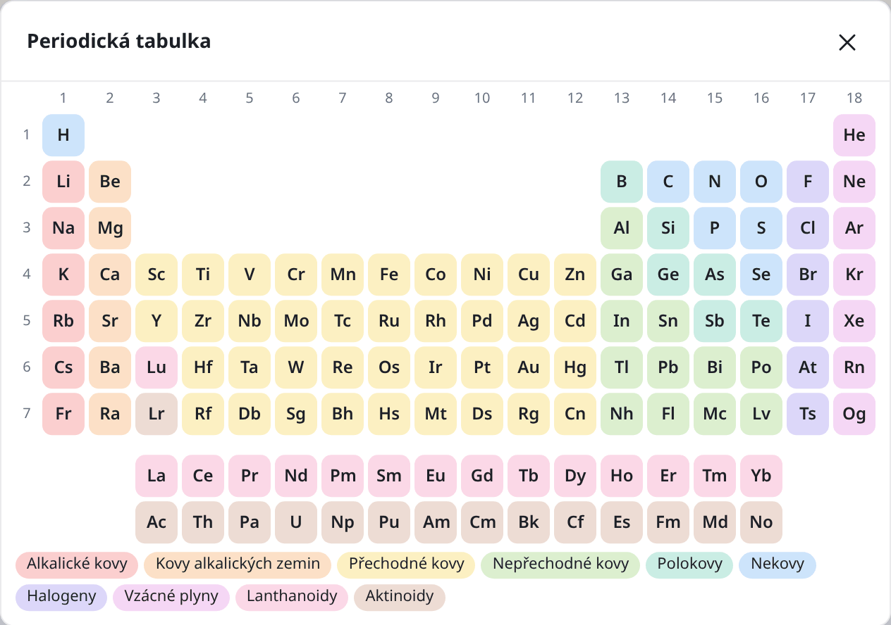
2.4 Náboje, radikály a vodíky
Nástroj náboje vlevo má čtyři varianty: kladný  , záporný
, záporný  a parciální náboje δ+ a δ−
a parciální náboje δ+ a δ−  . Klikněte na atom, další kliknutí náboj zvýší (u záporného sníží); parciální náboj další kliknutí vypne. + a − vyberou kladný a záporný.
. Klikněte na atom, další kliknutí náboj zvýší (u záporného sníží); parciální náboj další kliknutí vypne. + a − vyberou kladný a záporný.
Nepárový elektron  je varianta nástroje volných párů . Kliknutím na atom přidáte jeden elektron, dalším dva u sebe (singlet) a dalším žádný. Dva elektrony každý na jiné straně (triplet), tři nebo čtyři nastavíte v řádku Nepárové v panelu; na atomu bez vazeb se s nimi ukážou i volné páry, jako Lewisův symbol (·N̈·).
je varianta nástroje volných párů . Kliknutím na atom přidáte jeden elektron, dalším dva u sebe (singlet) a dalším žádný. Dva elektrony každý na jiné straně (triplet), tři nebo čtyři nastavíte v řádku Nepárové v panelu; na atomu bez vazeb se s nimi ukážou i volné páry, jako Lewisův symbol (·N̈·).


tečkyčárky
Nad atomem můžete stisknout také + nebo − pro náboj a . pro nepárový elektron. Jsou-li atomy vybrané, + a − změní náboj všem.
Atom, který má víc vazeb, než může mít, dostane červený čárkovaný kroužek, který je vidět jen na obrazovce a do obrázků se nedostane. V panelu je pak napsané, co je špatně, například Si nemůže mít 6 vazeb. Většinou chybí náboj; pro SiF62− viz oddíl 3.4.
Vodíky dopočítává program sám podle vazeb a náboje (CH3, NH2, OH). Jiný počet nastavíte v panelu v řádku Vodíky. Tlačítko Nakreslit H nakreslí vodíky vybraných atomů jako samostatné atomy, což potřebujete, když na vodík nebo od něj má vést zahnutá šipka. Skrýt nakreslené H je zase schová.
Na koncích řetězců se ve výchozím stavu píše CH3. Přepínač Uhlíky v panelu (CH₃, čára nebo Všechny C) to změní pro vybrané uhlíky: pro celou molekulu, nebo jen pro jeden konec. Všechny C napíše každý uhlík (CH3, CH2, CH), pro ty, kdo ještě nečtou roh jako uhlík. Výchozí volba pro nové kresby je v Nastavení. Nabitý uhlík se píše (C+), ledaže je nastavený na čára: pak se nakreslí jen jeho náboj v rohu, jak se karbokation nebo karbanion v mechanismu často kreslí.
2.5 Stereochemie
Plný klín míří k vám a šrafovaný klín  od vás. Oba jsou ve variantách nástroje vazby. Klín začíná na atomu, ze kterého táhnete, takže jeho úzký konec je u stereocentra. Vlnovka
od vás. Oba jsou ve variantách nástroje vazby. Klín začíná na atomu, ze kterého táhnete, takže jeho úzký konec je u stereocentra. Vlnovka  značí, že konfigurace není určená.
značí, že konfigurace není určená.
Označení R/S a E/Z (u komplexů Λ a Δ) zapnete v panelu zaškrtnutím R/S, E/Z, Λ/Δ, pro celou vybranou molekulu, nebo jen pro vybrané atomy a vazby. Počítá je RDKit a přejdou i do exportovaných obrázků a do souborů olomolu.
Když spojíte široké konce dvou klínů vazbou, nakreslí se tučně, jak je zvykem (například přemostění u morfinanu nebo přední strana Haworthova vzorce). Tučně můžete nakreslit i kteroukoli jednoduchou vazbu záměrně, třeba vazbu, která ve schématu vzniká, nebo tu, na kterou chcete upozornit: vyberte ji a v řádku Stereo v panelu zvolte tučná vazba (▬). Tučný může být i popisek atomu: v panelu Popisek → B.
2.6 Zvláštní vazby
Ve variantách nástroje vazby jsou ještě tři vazby, které se nepočítají jako obyčejné. Klávesa D vybere první z nich, každé další stisknutí další v pořadí (nad vazbou ji na ně mění):
- koordinační (dativní) vazba, šipka od donoru, který na ni spotřebuje svůj volný pár (další kliknutí ji otočí),
 vodíková vazba, tečkovaná,
vodíková vazba, tečkovaná, částečná vazba, vznikající nebo zanikající, čárkovaná, pro tranzitní stavy.
částečná vazba, vznikající nebo zanikající, čárkovaná, pro tranzitní stavy.
Klínem nebo šrafovaným klínem dostane koordinační vazba hloubku, s úzkým koncem u kovu. Zůstane přitom koordinační, takže donor nemá vazbu navíc. Překreslit a Otočit ve 3D pak zachovají, který z obou zrcadlových obrazů (Λ, Δ) jste nakreslili: nákresy, které by ho ztratily, Překreslit nenabídne a Otočit ve 3D u takového pohledu varuje. U oktaedrického komplexu se dvěma nebo třemi chelaty (cis-[CoCl2(en)2]+, [Co(en)3]3+) napíše R/S, E/Z, Λ/Δ vedle kovu (Λ), nebo (Δ). Chcete-li, v nastavení lze šipky nahradit čarami.

Tyto vazby se ukládají do souborů olomolu (.olom), do souborů KET a do obrázků, ale ne do souborů molfile, SMILES a podobných (oddíl 10.2).
2.7 Výběr, přesun, otáčení a mazání
Nástroj výběr  (V, nebo Esc) umí toto:
(V, nebo Esc) umí toto:
- kliknutí vybere atom, vazbu, šipku nebo text, Shift+kliknutí přidá do výběru,
- tažením po prázdném místě vyberete vše v obdélníku a to, co se vybere, se rozsvítí ještě předtím, než tlačítko pustíte; ve variantách je výběr lasem
 a Esc mezi nimi přepíná, když už není co rušit,
a Esc mezi nimi přepíná, když už není co rušit, - dvojklik vybere celou molekulu, Shift+dvojklik ji přidá do výběru, trojklik vybere celý její řádek reakčního schématu (molekuly, plusy a šipky i s tím, co je na nich) a Ctrl+A vybere vše,
- Ctrl+kliknutí vybere skupinu, ve které věc je (oddíl 2.9),
- vybrané věci přesunete tažením nebo šipkami na klávesnici (se Shift dál),
- za kulatý úchyt nad výběrem výběr otočíte,
- atom nebo vazba přetažená na jiný atom se s ním spojí. Už během tažení se přichytí a ukáže, jak to dopadne; když táhnete dál, zase se pustí. Vyplněný kruh si barvu nechá, pokud zůstane kruhem.
Mazat můžete gumou  (E), kliknutím nebo obdélníkem. Vybrané věci smaže Delete nebo tlačítko Smazat v panelu. Bez výběru smaže Delete to, co je právě pod myší.
(E), kliknutím nebo obdélníkem. Vybrané věci smaže Delete nebo tlačítko Smazat v panelu. Bez výběru smaže Delete to, co je právě pod myší.
Každý krok jde vrátit, takže klidně zkoušejte: Ctrl+Z je zpět, Ctrl+Shift+Z znovu.
2.8 Jedna sloučenina
Sůl jako K2SiF6 jsou tři samostatné částice (K+, K+ a SiF62−). Vyberte je všechny a v panelu klikněte na Jedna sloučenina. Spojí je neviditelné pojítko, takže se posouvají, zarovnávají a skládají do mřížky jako jedna molekula a panel ukáže jeden vzorec (F6K2Si).
Pojítka uvidíte, když je sloučenina vybraná, nebo pořád, když v Nastavení přepnete Pojítka na zobrazené. Oddělit částice zase rozdělí. Do souborů molfile a SMILES se pojítka nezapisují.
2.9 Skupiny a panel Objekty
Skupina drží věci pohromadě při výběru a posouvání, aniž by z nich dělala jednu sloučeninu: molekulu s jejím číslem pod ní, dvě poloviny schématu, odpověď k úloze, kterou chcete odsunout stranou. Vyberte dvě a více věcí (molekuly, šipky, plusy, texty) a stiskněte Ctrl+G skupiny jdou seskupit i do větších skupin. Ctrl+Shift+G skupinu rozdělí, vždy o jednu úroveň.
Obyčejné kliknutí dál vybírá atom nebo molekulu, takže skupina kreslení nikdy nepřekáží. Ctrl+kliknutí vybere skupinu a další Ctrl+kliknutí skupinu kolem ní; Ctrl+tažení ji posune a Ctrl+tažení obdélníku vezme celé skupiny toho, čeho se dotkne. Zarovnat posouvá skupiny jako celky a obrázky SVG je pro Inkscape zachovají jako skupiny.
Panel Objekty dole v liště nástrojů vypisuje věci a skupiny kresby. Kliknutí na řádek ho vybere (se Shift nebo Ctrl přidá), řádek pod myší se v kresbě rozsvítí a šipka před skupinou ji rozbalí. Dvojklikem na skupinu ji pojmenujete. Řádek přetažený na skupinu do ní přejde, přetažený na proužek dole ze všech skupin vyjde. Tlačítka nahoře seskupí a rozdělí vybrané. V nabídce pravého tlačítka je také Seskupit, Zrušit seskupení a Vybrat její skupinu.
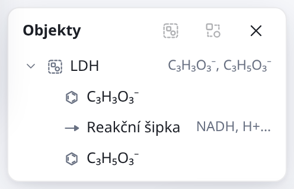
2.10 Kopírování a vkládání
Ctrl+C, Ctrl+X a Ctrl+V fungují jako jinde. Po vložení se průhledná kopie drží u myši, dokud ji kliknutím nepoložíte, a Esc vkládání zruší.
Vložit jde i text odjinud: SMILES, InChI nebo molfile zkopírovaný z webu nebo z jiného programu se po Ctrl+V rovnou nakreslí. Dvojná vazba, které SMILES neurčuje E ani Z, dostane vedle sebe vlnovku.
2.11 Text
Zvolte nástroj text (T), klikněte a pište. Co napíšete, zůstane přesně tak, jak je, takže se čísla v DOI nebo v názvech nezmění. V okénku nad textem je všechno pro jeho úpravu:
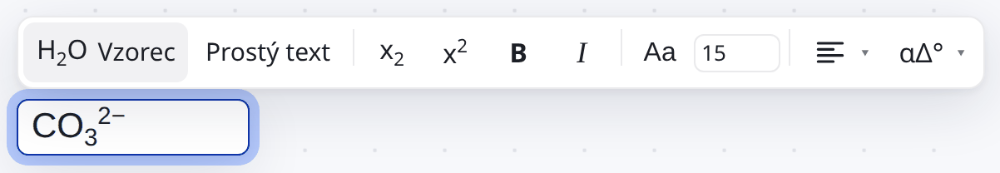
- Vzorec udělá vzorec z označené části, nebo bez označení z celého textu. Číslice za písmeny se změní na dolní indexy a náboj na konci (Fe3+, CO32-, [SiF6]2-) na horní index. Rozumí i zápisu CO_3^2- a e- nebo 2e- jako náboji elektronu. Prostý text formátování zruší.
- Co pravidlo nezvládne, nastavíte ručně: x2 (Ctrl+,), x2 (Ctrl+.), B (Ctrl+B) a I (Ctrl+I). Změní označenou část, nebo bez označení to, co napíšete dál.
- V nabídkách okénka je zarovnání řádků (víceřádkový text pod molekulou nebo na šipce je jinak na střed) a zvláštní znaky: řecká písmena, šipky, °, ±, ‡.
- Aa přepíná celý text mezi bezpatkovým (Arial) a patkovým písmem (Times New Roman) a pole vedle nastaví jeho velikost v bodech. Bez nich má text písmo a velikost podle stylu kresby (kapitola 9). Vybraný text jde celý ztučnit tlačítkem Tučně v panelu, třeba číslo sloučeniny.
Enter text dokončí, Shift+Enter začne nový řádek. Zkopírovaný text se do jiných programů vloží jako obyčejná slova, takže DOI jde vložit rovnou do prohlížeče.
2.12 Reakční šipky
Zvolte reakční šipku 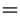 (X). Kliknutí položí šipku standardní délky, tažením nakreslíte vlastní (Shift: libovolný úhel). Ve variantách jsou rovnovážná , rezonanční (mezomerní)
(X). Kliknutí položí šipku standardní délky, tažením nakreslíte vlastní (Shift: libovolný úhel). Ve variantách jsou rovnovážná , rezonanční (mezomerní)  , retrosyntetická
, retrosyntetická  , vícekroková , přeškrtnutá (reakce neproběhne), rovnítko
, vícekroková , přeškrtnutá (reakce neproběhne), rovnítko
Rovnováhu posunutou na jednu stranu nastavíte u vybrané rovnovážné šipky v panelu tlačítkem Rovnováha: každé kliknutí ji posune dál, z vyrovnané na stranu produktů (dolní šipka je kratší) a na stranu reaktantů (kratší je horní).
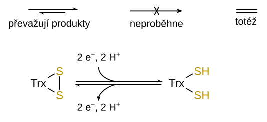
Nástroj  položí znaménko plus mezi reaktanty.
položí znaménko plus mezi reaktanty.
2.13 Kotvy
Kotvy drží text nebo činidlo u toho, k čemu patří, takže nemusíte nic přesouvat po kouscích.
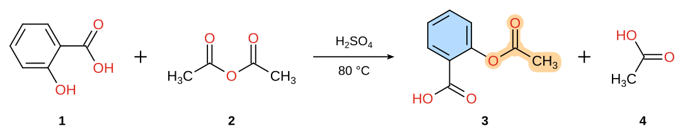
U molekuly. Každá molekula má čtyři místa pro text: pod, nad, vlevo a vpravo. Když text táhnete k molekule, kotvy se ukážou jako rámečky a ta nejbližší se zvýrazní. Pustíte, a text na ní zůstane: odteď se pohybuje a zarovnává s molekulou. Víc textů na jedné kotvě se srovná pod sebe a pořadí změníte přetažením na jiné místo. Takhle dáte číslo sloučeniny pod molekulu nebo počet molů (2 NaOH) vlevo. V panelu jde kotva vybrat šipkami ↓ ↑ ← → a volně text uvolní; uvolní se i odtažením od molekuly. Text napsaný těsně pod molekulu, nad ni nebo vedle ní se na kotvu dá rovnou.
U reakční šipky. Šipka má kotvy nad sebou a pod sebou. Přetáhněte k ní text (podmínky) nebo celou molekulu (činidlo) a bude se pohybovat se šipkou, stejně jako text napsaný těsně nad ni nebo pod ni; pořadí změníte přetažením v řadě. U otočené nebo svislé šipky stojí pod sebou, těsně u ní, stejně jako nad vodorovnou šipkou a pod ní. Před molekulu na šipce dáte v panelu + nebo − (přidává se, odchází). Dvojklik na šipku ji vybere i se vším, co na ní je.
2.14 Boční oblouky u reakčních šipek
Boční oblouk ukazuje, že se něco cestou k reakci přidává nebo z ní odchází, jako NAD+ → NADH.
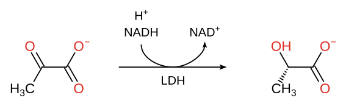
- Zvolte nástroj šipky. Uprostřed každé reakční šipky se ukáže kroužek.
- Táhněte z kroužku ven (oblouk, který odchází), nebo z plátna ke kroužku (oblouk, který přichází), nad šipku i pod ni.
- Na konec oblouku přetáhněte text nebo molekulu. Šipka se sama prodlouží, a když je odeberete, zase zkrátí.
Další oblouk se přichytí k délce prvního, tažením dál bude delší. Když chcete oblouk později změnit:
- tažením za konec změníte jeho délku, přes šipku ho přenesete i se stohem na druhou stranu,
- kliknutím vyberete jen oblouk a Del ho smaže; co bylo na jeho konci, zůstane volně na svém místě,
- v panelu šipky Překlopit obrátí její směr a dá oblouky a stohy na druhou stranu.
Když jste délku šipky nastavili tažením za její konec, oblouky ji nemění, ale Zarovnat reakční schéma ano.
U rovnovážné šipky má každá z jejích dvou šipek své oblouky: oblouk nad ní se napojí na horní šipku a jde jejím směrem, oblouk pod ní na dolní a jde zpět. Redukce thioredoxinu tak nahoře přijme 2 e− a 2 H+ a cestou zpět je dole odevzdá.
2.15 Panel vpravo
Panel ukazuje vlastnosti toho, co je vybrané, a umí je měnit.
Pro celou molekulu ukáže vzorec (s tlačítkem Info, oddíl 6.3), Uhlíky, Číslování IUPAC, R/S, E/Z, Λ/Δ, Aromatizovat a Kekulé, Závorky, volné páry, Nakreslit H, Barva a Zvýraznění. U více molekul přibude Jedna sloučenina.
Pro jeden atom nebo část molekuly se objeví část Atom: Prvek, Číslo, Náboj (− a + o jeden; i δ− a δ+), Nepárové elektrony, Volné páry, Popisek (normální nebo tučný) a Vodíky. Pod volnými páry je napsané, kolik jich atom má.
U vazby je to Řád, Druh, Stereo (mezi nimi i tučná vazba) a u dvojné vazby 2. čára: Další posune druhou čáru dál, doprostřed, na jednu nebo na druhou stranu, a Auto ji vrátí programu.
Dole je vždy Smazat a počet vybraných věcí.
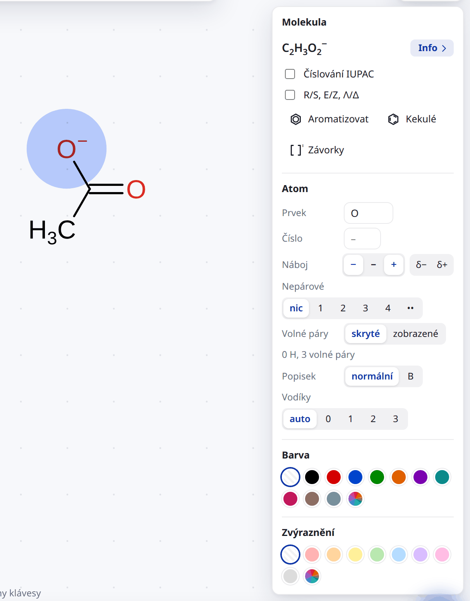
3 Šablony a struktury podle názvu
Šablony v dolní liště (nebo Shift+T) otevřou sbírku hotových struktur. Vlevo pod hledáním jsou její skupiny: Kruhy, Funkční skupiny, Zkratky, Sloučeniny, Konformace a projekce, Komplexy, Aminokyseliny, Cukry a nukleové báze a Činidla a rozpouštědla. Velké skupiny se dělí dál (Kruhy na aromatické, heteroaromatické, alicyklické a nasycené heterocykly; Konformace a projekce na židličky a vaničky, Newmanovy, Haworthovy a Fischerovy projekce): skupina ukáže všechno pod nadpisy, podskupina jen to své. Příště se okno otevře tam, kde jste byli naposledy.
Kliknutím šablonu vyberete. Průhledný náhled se pak drží u myši a další kliknutí ji položí, i víckrát za sebou. Esc vkládání ukončí.
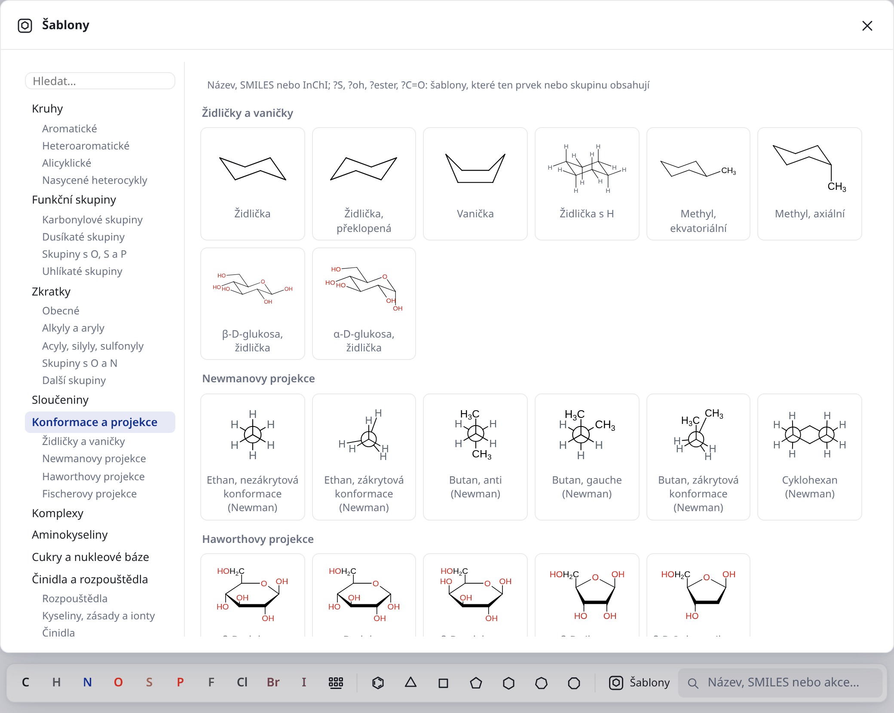
3.1 Hledání
Do pole Hledat… napište část názvu, česky nebo anglicky (kyselina, glucose, židlička). Aminokyselinu najdete i podle kódu, který má na kartě (Phe nebo F). Když žádná šablona neodpovídá, pole nakreslí SMILES nebo vyhledá název, stejně jako vyhledávací řádek (oddíl 3.5).
S otazníkem na začátku hledání ukáže šablony, které obsahují určitou část, ať se jmenují jakkoli. Na velikosti písmen nezáleží.
- skupina:
?oh,?Ts,?Boc,?Ph, - druh sloučeniny:
?ester,?amin,?keton,?kyselina, - prvek:
?S,?Cl, - aminokyselina podle třípísmenného kódu:
?ala, - libovolná část zapsaná jako SMILES:
?C=O,?C(=O)N.
Hodí se to při výuce: ?ester ukáže najednou všechny estery mezi šablonami.
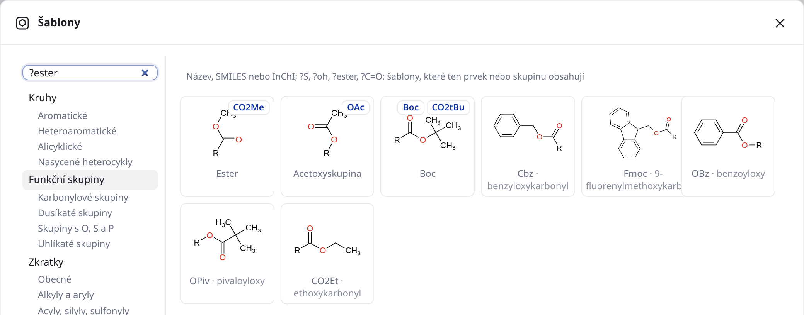
?ester3.2 Funkční skupiny se připojují
Šablony ve skupině Funkční skupiny mají místo, kterým se připojí. Vyberte skupinu a klikněte na atom své molekuly: skupina se k němu připojí a natočí se od jeho ostatních vazeb. Tažením od atomu ji namíříte. S Shift se z atomu stane její první atom (COOH na koncovém uhlíku pentanu dá kyselinu pentanovou). Kliknutím na prázdné plátno ji položíte samostatně, na R.
Má-li skupina zkratku (Ph, Boc, OMe…), je na její kartě malé tlačítko s touto zkratkou. To ji vloží jako jeden atom se zkratkou.
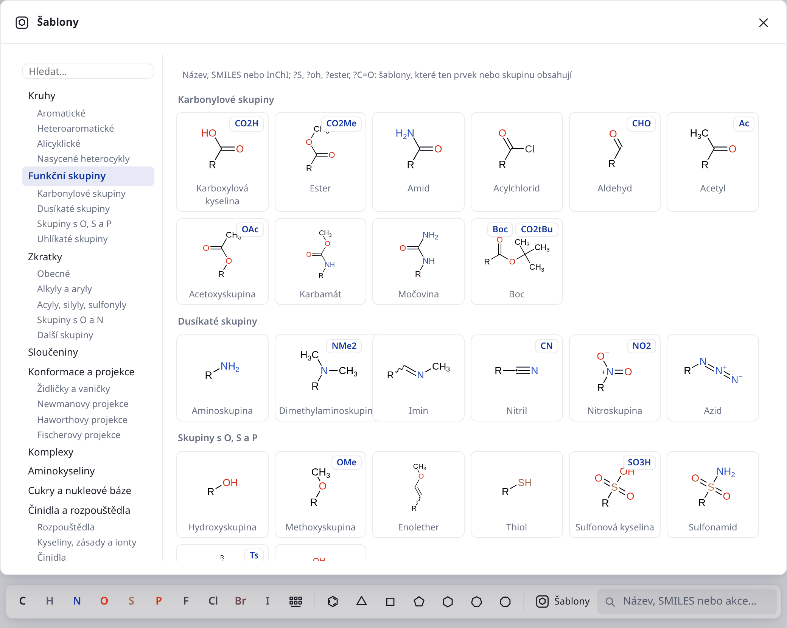
3.3 Konformace a projekce
Židličky a vanička jsou nakreslené jako v učebnici: rovnoběžné hrany, axiální vazby svisle, ekvatoriální rovnoběžně s vazbami kruhu. Židlička se čte jako molekula, kterou ukazuje, viděná trochu shora: spodní dlouhá hrana je vpředu, horní vzadu a každá skupina je nahoře, nebo dole, podle toho, kam míří. SMILES, InChI, Info i soubory tak dostanou stereoizomer z obrázku (šablona β-D-glukosy je β-D-glukosa, trans-1,2-dibromcyklohexan zůstane trans); jiné programy ho dostanou jako klíny na židličce. Stejně se čte i cyklohexen nakreslený ve tvaru židličky (položidlička produktu E2), jen ho nejde překlopit ani otočit. Kondenzované a přemostěné kruhy (dekaliny, steroidy) zatím stereochemii z obrázku nemají.
Židličku můžete nakreslit i ručně, nástrojem vazby: program ji pozná podle tvaru, který má každá židlička, i když není přesně jako v šabloně. Protější hrany jsou rovnoběžné a dva protější rohy míří dovnitř (cik-cak). Pravidelný šestiúhelník, Haworthův kruh ani vanička tento tvar nemají. Kruh se zaoblenými, tupými špičkami, u kterého nejde poznat, kterou židličku ukazuje, program za židličku nebere. Když na rozpoznanou židličku ukážete myší nebo táhnete některý její atom, celý kruh se zvýrazní zelenomodře místo obvyklé modré; kresba se tím nemění. S rozpoznanou židličkou funguje stereochemie, Otočit ve 3D i překlopení. Překlopení židličky
z jedné židličky udělá druhou (oddíl 5.5).- Newmanovy projekce ethanu, butanu a cyklohexanu jsou molekuly při pohledu podél vazby: přední uhlík je bod uprostřed, zadní uhlík kruh a každá skupina kolem nich je obyčejný atom. Zahnuté šipky, náboje, volné páry i R/S na nich fungují jako na každé molekule: eliminaci E2 na cyklohexanu, viděném podél C1–C2 a C5–C4 s axiálními vazbami svisle nahoru a dolů, nakreslíte šipkou z axiální vazby C–H na vazbu viděnou z čela (místo mezi středem a kruhem) a šipkou z C–Br na Br. Kliknutí přesně doprostřed vybere přední uhlík, kliknutí na kruh zadní. Když je vybraný uhlík projekce, panel Newmanova projekce umí přepsat skupiny (Přední, Zadní: H, CH3, OH, Cl, Ph…), nastavit Torzní úhel (0° zákrytová (syn), 60° gauche, 120° zákrytová, 180° anti) a tlačítkem Otočit zadní o 60° otáčet zadním uhlíkem; v cyklohexanu skupiny kruhu zůstávají a zadní uhlík se sám otočit nedá. Soubory a SMILES dostanou stereoizomer, který projekce ukazuje; molfile, CDXML a další formáty pro jiné programy ho dostanou nakreslený obyčejně, s klíny. Překreslit z něj udělá obyčejný nákres a nákresy ze starších verzí se otevřou jako molekuly.
- Haworthovy a Fischerovy projekce (glukosa, galaktosa, ribosa, glyceraldehyd, alanin, serin…) mají stereochemii, která se do souborů zapíše jako klíny.

3.4 Komplexy
Skupina Komplexy má obecné tvary koordinačních sloučenin: Lineární, Trigonálně planární, Tetraedrický, Čtvercově planární, Trigonálně bipyramidální, Tetragonálně pyramidální a Oktaedrický. Uprostřed je obecný atom M, kolem něj ligandy L a klíny dávají hloubku. M a L nahradíte jako jakýkoli atom: kliknutím prvkem z dolní lišty, klávesou nad atomem, nebo v panelu v poli Prvek, kam jde napsat i NH3, PPh3 nebo Cl.
Náboj komplexního iontu patří atomu. Program počítá vazby a volné páry z nábojů atomů a náboj napsaný na závorkách je jen text. Jako příklad vezměme hexafluorokřemičitan [SiF6]2−:
- Položte Oktaedrický komplex, M změňte na Si a všechna L na F (vyberte je a do pole Prvek napište F).
- Vyberte Si a v panelu nastavte Náboj na 2−, nebo dvakrát stiskněte − nad atomem. Si s šesti vazbami je teď v pořádku a červený kroužek zmizí.
- Chcete-li zápis se závorkami, klikněte nástrojem Závorky na ion. Náboj už nese Si, takže ho na závorky nepište, jinak bude v obrázku dvakrát.
- Přidejte draselné ionty K+ a celou sůl spojte tlačítkem Jedna sloučenina (oddíl 2.8).
Druhá možnost je bližší vazebné představě: čtyři obyčejné vazby Si–F a dva fluoridy F− připojené koordinační vazbou od F k Si. Dativní vazba se Si do vazeb nepočítá, takže Si zůstane neutrální a náboje nesou oba F−.
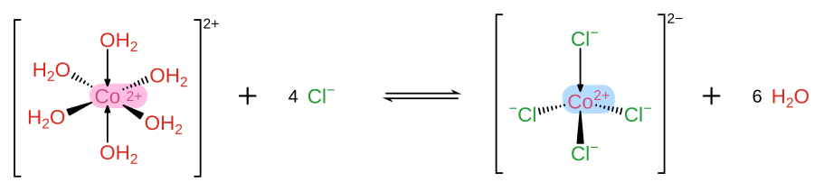
Jakýkoli komplex si prohlédnete v prostoru pomocí Otočit ve 3D (oddíl 5.2), i čtvercově planární, jako je cisplatina nakreslená jako kříž.
3.5 Vyhledávací řádek: struktury, šablony a akce
Pole na pravém konci dolní lišty (kurzor do něj dá /) rozumí tomu, co napíšete, několika způsoby a seznam nad ním ukáže, co našel, to nejlepší hned u pole. Šipky ↑ a ↓ vybírají, Enter provede, Esc odejde.
- SMILES (
CC(=O)Oc1ccccc1C(=O)O) nebo InChI se nakreslí hned, jak píšete, přímo ve vašem počítači, i bez internetu; Enter a kliknutí ho položí, kam má přijít. - Název (
aspirin,caffeine) nebo číslo PubChem (CID 2244) se vyhledá v databázi PubChem. Potřebuje to internet a PubChem zná jen anglické názvy. Na PubChem se pošle jen to, co jste napsali, nikdy vaše kresba. - Prvky podle značky nebo názvu (
Fe,železo) vyberou nástroj atomu; šablony najde podle názvu jako okno Šablony a s otazníkem na začátku šablony, které danou část obsahují (?ester,?C=O, oddíl 3.1). - Nástroje a akce olomolu podle názvu nebo podle toho, co dělají (
překlopení židličky,export SVG,newman,promítat), i s klávesou, takže najdete i to, u čeho nevíte, kde je tlačítko. - Kresby: otevřené podle názvu a vaše nedávné soubory.
- Odkaz na olomol, nebo jen jeho konec (
#smiles=CCO), otevře, co v něm je (oddíl 8.6); hodí se v nainstalované aplikaci, která nemá adresní řádek.
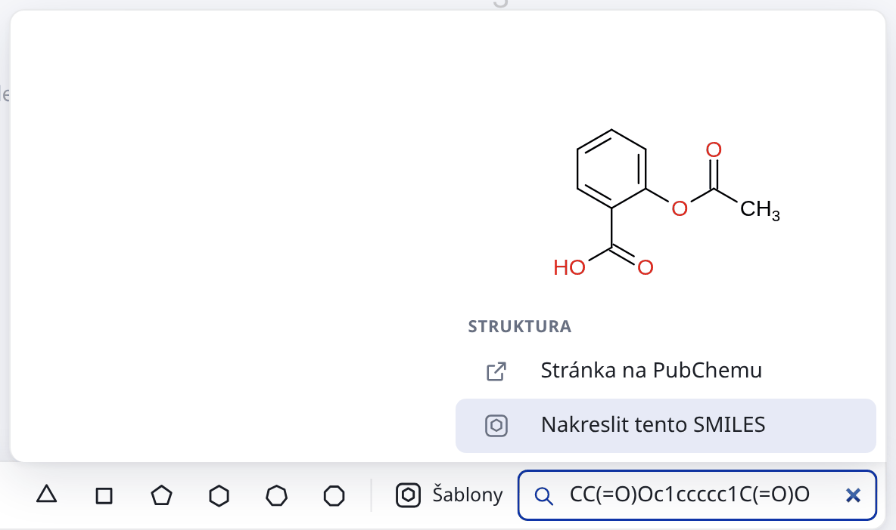
SMILES, InChI nebo CID je v seznamu první; u slov je první to, co má olomol, a PubChem až poslední, takže Enter nikdy nepošle na PubChem slovo, kterému odpovídá šablona nebo akce.
Když je ve SMILES chyba, program řekne, co je špatně a kde, například Atom 2 (N) má víc vazeb (4), než může mít neutrální N; s nábojem může mít o jednu víc: [N+]. Když je chybou náboj mimo hranaté závorky (N+ místo [N+]), nabídne opravený SMILES: Nakreslit místo toho ….
SMILES nebo InChI zkopírované odjinud stačí vložit na plátno přes Ctrl+V vyhledávací řádek k tomu není potřeba.
Halogen s více vazbami se nakreslí tak, jak je napsaný: Cl(=O)(=O)(=O)[O-] jako chloristan s dvojnými vazbami Cl=O (ne Cl3+ se čtyřmi O−) a Cl=O jako H–Cl=O. RDKit takové zápisy sám odmítá, proto pro ně neumí InChI ani R/S.
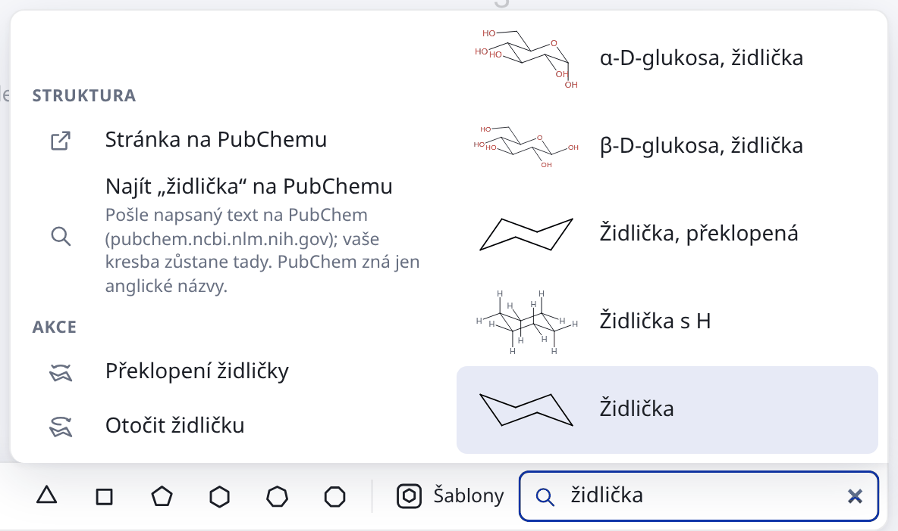
židlička: šablony a akce4 Mechanismy
V olomolu jsou volné páry a zahnuté šipky součástí kresby, ne obrázky položené navrch. Patří ke svým atomům a vazbám, takže když molekulu posunete, otočíte nebo změníte, překreslí se samy, a to už během tažení.
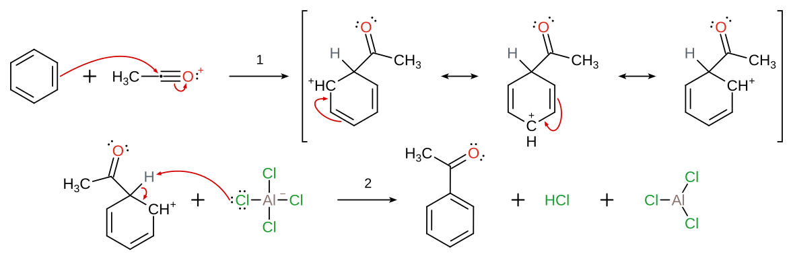
4.1 Volné páry a nepárové elektrony
Zvolte volné páry (:) a klikněte na atom, nebo táhněte obdélník přes více atomů. Když jsou atomy už vybrané, stačí stisknout tlačítko nástroje nebo : a páry se ukážou u všech (znovu: skryjí se). V panelu je to přepínač Volné páry: skryté / zobrazené.
Kolik párů atom má, plyne z chemie: valenční elektrony minus náboj, vazby, vodíky a nepárové elektrony. Proto dusík v pyrrolu nemá žádný a v pyridinu jeden. Když atomu přidáte náboj nebo vazbu, počet párů se sám upraví. Páry se kreslí jako tečky; v Nastavení je můžete přepnout na čárky (Čárky (Lewis)), jak se často učí u nás.
4.2 Zahnuté šipky a půlšipky
Zvolte zahnutou šipku (A) pro elektronový pár, nebo ve variantách půlšipku  (Shift+A) pro jeden elektron. Potom:
(Shift+A) pro jeden elektron. Potom:
- Začněte tam, odkud elektrony jdou: na vazbě, na atomu s volným párem, nebo u půlšipky na atomu s nepárovým elektronem (půlšipka vyjde z něj).
- Táhněte tam, kam jdou: na atom, na vazbu, nebo na tečku nové vazby (viz níže), a pusťte.
Místo tažení můžete kliknout na začátek a pak na konec. Nástroj zůstává zapnutý, takže můžete kreslit šipku za šipkou. Kudy šipku vést, si program spočítá sám: vyhne se popiskům, vazbám, volným párům a jiným šipkám a začne na správné straně.
Šipka k nové vazbě. Když elektrony vytvoří novou vazbu, může šipka skončit mezi oběma atomy, tam, kde vazba vznikne. Během tažení půlšipky, nebo zahnuté šipky se stisknutým Shift (stačí ho stisknout až během tažení), vedou od elektronů slabé čárkované čáry ke všem atomům do vzdálenosti pěti délek vazby, se kterými by nová vazba mohla vzniknout, a uprostřed každé je tečka. Čáry ve směru ukazatele jsou výraznější. Pusťte šipku na tečku a skončí u nové vazby; pustíte-li ji na atom, skončí na atomu. Tak nakreslíte třeba odtržení vodíku radikálem chloru: půlšipka z Cl• a půlšipka z vazby H–C se potkají u nové vazby Cl–H a druhá půlšipka z vazby H–C jde na uhlík. Stejně se kreslí spojení dvou radikálů nebo nukleofil, který tvoří novou vazbu.
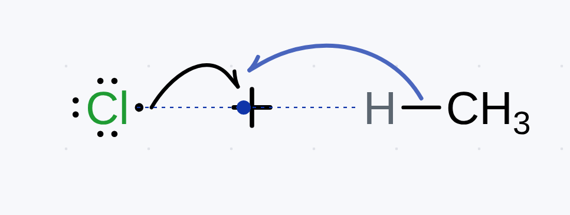
Hlídá také chemii. Šipku z atomu, který žádné elektrony nemá, nedovolí a řekne proč, například Atom C nemá volný elektronový pár ani nepárový elektron, elektrony z něj tedy vycházet nemohou. Začněte na vazbě nebo na jiném atomu.
Barvu nových šipek (třeba červenou) nastavíte v Nastavení → Nové šipky.
4.3 Když se šipka nelíbí
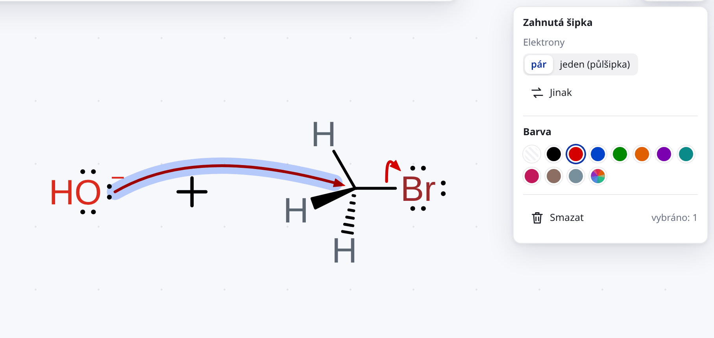
- Táhněte za šipku nástrojem výběr
 tam, kudy má vést. Program vybere nejbližší dobrý tvar.
tam, kudy má vést. Program vybere nejbližší dobrý tvar. - V panelu klikněte na Jinak a šipka se nakreslí druhým nejlepším způsobem, z druhé strany nebo z jiného volného páru. Další kliknutí ukáže další možnosti, Nejlépe vrátí původní tvar.
- Přepínač Elektrony změní šipku na půlšipku a zpět (pár / jeden (půlšipka)).
4.4 Orbitaly
Orbitaly jsou ve variantách nástroje pod volnými páry: orbital p , hybridní orbital  (volný pár, σ*) a orbital s čtvrtá varianta, čára překryvu
(volný pár, σ*) a orbital s čtvrtá varianta, čára překryvu  , jen kreslí čárkované čáry tažením z jednoho orbitalu na orbital jiné molekuly. Kliknutím na atom na něj orbital dáte. Orbital p stojí svisle, hybridní míří od vazeb, a když z atomu táhnete, natočí se rovnou tím směrem. Leží za vazbami a popisky, takže kresba zůstane čitelná.
, jen kreslí čárkované čáry tažením z jednoho orbitalu na orbital jiné molekuly. Kliknutím na atom na něj orbital dáte. Orbital p stojí svisle, hybridní míří od vazeb, a když z atomu táhnete, natočí se rovnou tím směrem. Leží za vazbami a popisky, takže kresba zůstane čitelná.
- Natočení: táhněte za lalok, nástrojem orbitalu nebo výběru. Orbital se otáčí po 15° a přichytává se ke směrům vazeb, ke kolmicím na ně a k osám mezi nimi; se Shiftem se otáčí volně. S molekulou se otáčí, překlápí i překresluje.
- Fáze: kliknutím na lalok nástrojem orbitalu se stínovaný a bílý lalok vymění, v panelu je to Opačná fáze. Stínovaný lalok je šedý a druhý bílý. Nástroj barvy obarví lalok, na který kliknete; v panelu přepínač nad barvami, stínovaný nebo opačná fáze, určí, který lalok barvy obarví.
- Velikost laloků, třeba podle koeficientů HOMO a LUMO, nastavíte v panelu tlačítky − a +.
- Překryv: lalok přetažený na orbital jiné molekuly nakreslí mezi nimi čárkovanou čáru. Molekuly zůstanou dvě, při zarovnání se ale drží spolu, jako diena a dienofil. Čára vede mezi lalokem, který jste táhli, a lalokem, na který jste ho pustili (třeba lalokem vazby C–H a dolním lalokem orbitalu p); puštěná na atom spojí laloky, které jsou k sobě natočené.
- Šipky: zahnutá šipka může začít na laloku nebo na něm skončit, třeba z volného páru nukleofilu do σ* vazby C–Br.
Na atomu s popiskem (O, N, Br) začínají laloky až za písmenem a vodíky i náboj se jim vyhnou (NH vedle orbitalu, u HO− je minus nad O). V Otočit ve 3D (oddíl 5.2) se orbitaly p postaví kolmo na rovinu molekuly, tak jak ji zrovna vidíte, a zůstanou na té straně, na kterou jste je nakreslili. Po Použít tento pohled tak zůstanou, a nový orbital p na takovém atomu dostane stejný směr.


4.5 Mezomerní struktury, tranzitní stavy a závorky

Mezomerní struktury oddělte rezonanční šipkou  , variantou reakční šipky.
, variantou reakční šipky.
Závorky  (K): táhněte obdélník, nebo klikněte na molekulu. Tlačítko Závorky v panelu je dá kolem vybraných atomů. Závorky kolem celé molekuly se hodí pro tranzitní stav nebo komplexní ion a panel jim přidá vpravo nahoře ‡, náboj nebo cokoli napíšete. Závorky kolem části řetězce značí opakující se jednotku polymeru: protnou vazby, které z ní vycházejí, a dostanou n. Tvar přepíná hranaté a kulaté.
(K): táhněte obdélník, nebo klikněte na molekulu. Tlačítko Závorky v panelu je dá kolem vybraných atomů. Závorky kolem celé molekuly se hodí pro tranzitní stav nebo komplexní ion a panel jim přidá vpravo nahoře ‡, náboj nebo cokoli napíšete. Závorky kolem části řetězce značí opakující se jednotku polymeru: protnou vazby, které z ní vycházejí, a dostanou n. Tvar přepíná hranaté a kulaté.
Tranzitní stavy využívají částečné vazby a náboje δ ve variantách nástroje vazby a nástrojů náboje. Značka δ+ nebo δ−, přes kterou by vedla zahnutá šipka, se sama přesune na jinou stranu atomu. Tranzitní stav SN2 načrtnutý od ruky promění Překreslit v obrázek z učebnice: obě částečné vazby v přímce, zbylé tři vazby s klíny tak, jak jste je načrtli.
4.6 Aromatické kruhy
Tlačítko Aromatizovat v panelu nakreslí do aromatických kruhů kroužek, plný, nebo čárkovaný, zvolíte-li to v Nastavení → Aromáty. Nabité skupiny, které vypadají ve všech mezomerních strukturách stejně (COO−, NO2, SO3−, guanidinium), se nakreslí delokalizovaně s náboji δ. Bez výběru se to týká všech molekul. Kekulé vrátí jednoduché a dvojné vazby.
Pod kroužkem zůstávají jednoduché a dvojné vazby, takže se nezmění vzorec, volné páry ani soubory a jiné programy dostanou běžný Kekulého vzorec. Proto také Kekulé vrátí přesně ty vazby, které tam byly.
Když strukturu změníte tak, že aromatický kruh nebo delokalizovaná skupina přestane dávat smysl (smažete atom kruhu, kyslík acetátu přetáhnete na jiný atom), program ji sám vrátí na Kekulého vzorec.
5 Úprava a uspořádání
5.1 Překreslit
Když molekula vypadá zmateně, třeba po vložení SMILES, vyberte ji a klikněte na Překreslit  . Program nabídne několik nákresů od různých metod vedle vašeho Současný nákres a vy si kliknutím vyberete. Volbu vrátí Ctrl+Z.
. Program nabídne několik nákresů od různých metod vedle vašeho Současný nákres a vy si kliknutím vyberete. Volbu vrátí Ctrl+Z.
Nákresy jsou seřazené. První jsou ty bez křížících se vazeb a překrytých atomů, s pravidelnými vazbami a úhly, a ukáže se jen pár nejlepších. Seřadí se jednou, když skončí rychlé metody; nákresy od pomalejších (úprava Indigem, pohledy na 3D model) přijdou o pár sekund později a přidají se za ně, takže se žádný nákres před očima nepřesune. Ukázat všechny nákresy přidá ostatní a Ukázat jen nejlepší je zase schová. Pod nákresem je upozornění, když se v něm kříží vazby nebo překrývají atomy.
Každý nákres se kontroluje: když by změnil molekulu, třeba její stereochemii, vůbec se nenabídne. Překreslení mění, jak molekula vypadá, nikdy to, co je. Každý nákres celé molekuly se srovná se stránkou: natočí se nejvýš o 15° tak, aby většina vazeb ležela v násobcích 30°, stejně jako molekula vložená jako SMILES (pohled na 3D model si nechá pohled pro něj zvolený).
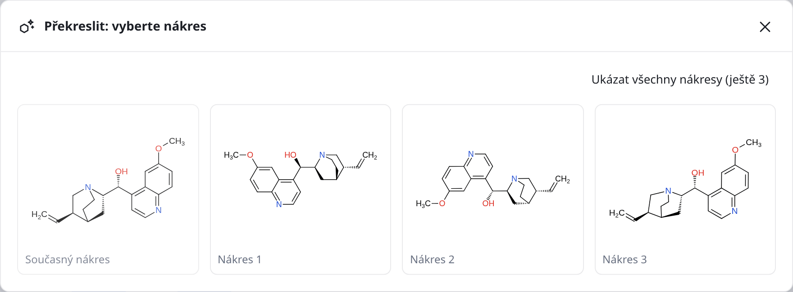
Nákresy z 3D modelu. Některé nákresy vznikají z 3D modelu molekuly, který se natočí a promítne do roviny s klíny pro hloubku. Nabízejí se tam, kde jsou tím pravým obrázkem: pro klece a přemostěné kruhy (adamantan, norbornan, tropan), komplexy kovů, molekuly s rozšířeným oktetem a přechodné stavy SN2. Jakoukoli jinou molekulu ukáže ve 3D Otočit ve 3D. Velká molekula, třeba taxol, může trvat i deset sekund, ale stránka přitom nezamrzne.
Molekuly s jedním centrálním atomem s rozšířeným oktetem nebo s pěti a více elektronovými páry kolem sebe (PCl5, SF6, SF4, ClF3, XeF4, ClO4−, SO42−) dostanou tvar podle VSEPR, i s místy pro volné páry. Síran se nakreslí jako v učebnici, s dvojnými vazbami S=O v rovině papíru a O− klínem a šrafovaným klínem. Tato část je zatím experimentální (oddíl 10.2).
5.2 Otočit ve 3D
Někdy molekula nejlépe vynikne z jedné konkrétní strany. Vyberte jednu molekulu a klikněte na kostku  vedle Překreslit. Program sestaví 3D model, což u velké molekuly chvilku trvá, a ukáže ho přesně tak, jak se nakreslí, se zadní částí bledší, aby byla vidět hloubka.
vedle Překreslit. Program sestaví 3D model, což u velké molekuly chvilku trvá, a ukáže ho přesně tak, jak se nakreslí, se zadní částí bledší, aby byla vidět hloubka.
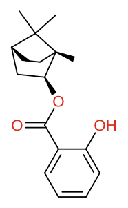
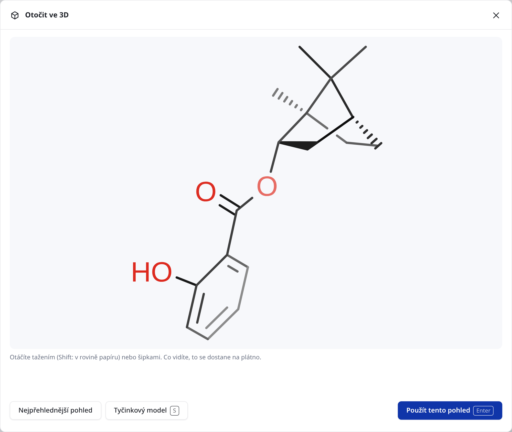
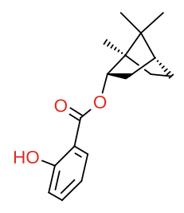
po vloženív okně, otočený ručněpo Použít tento pohled
- Tažením molekulu otáčíte, s Shift v rovině papíru.
- Šipky na klávesnici otáčejí po malých krocích, s Shift v rovině papíru.
- Nejpřehlednější pohled se vrátí k pohledu, který program našel jako nejlepší a na kterém také začíná.
- Tyčinkový model (S) ukáže místo nákresu model takový, jaký je, otočený stejně: se skutečnými délkami vazeb a úhly a se všemi vodíky. Skupiny psané zkratkou jsou rozkreslené (viz níže). Barvy a zvýraznění atomů a vazeb z kresby má také. Malé vodíky (H) nakreslí vodíky, které model přidá, malé a blízko jejich atomů, aby vynikla kostra; ty, které jste nakreslili jako atomy, zůstanou, jak jsou. Na plátno nejde: místo Použít tento pohled je Uložit obrázek (PNG, vedle něj SVG), třeba do poznámek vedle nákresu, a Esc okno zavře, kresba zůstane, jak byla.
- Použít tento pohled dá nákres na plátno. Ctrl+Z ho vrátí. Bledší zadní část je jen pomůcka v tomto okně; na plátně je běžný nákres.
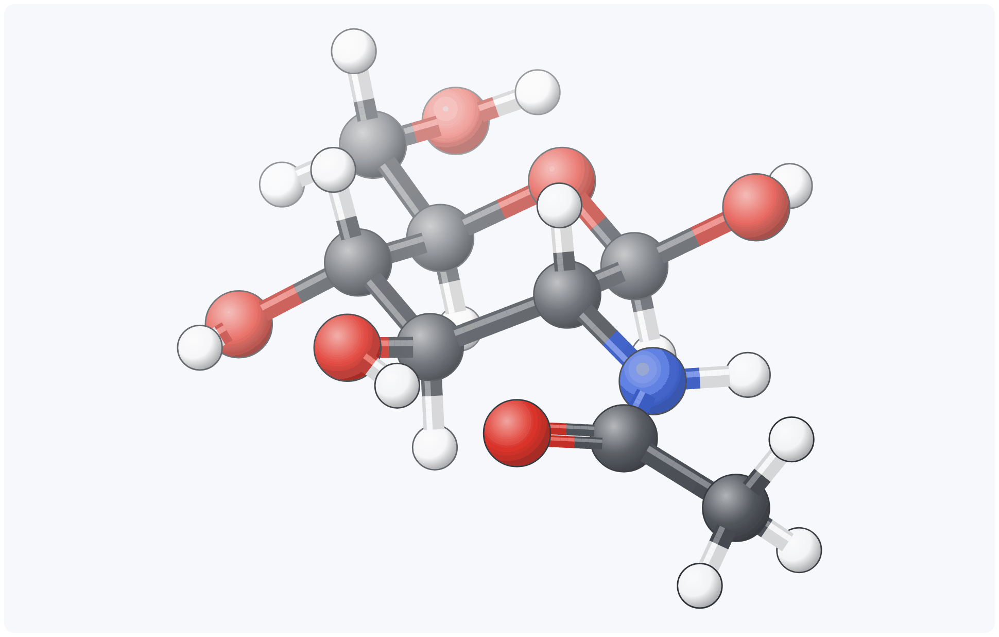
 všechny vodíkyH: malé vodíky
všechny vodíkyH: malé vodíkySkupiny psané zkratkou (Ph, OMe, NHAc, OBz, i PPh3 u kovu) tyčinkový model rozkreslí na jednotlivé atomy, aby byl vidět skutečný tvar molekuly. Uhlíky, vodíky a vazby skupiny mají vlastní barvu, vysvětlenou pod modelem. Kyslík, dusík a další prvky si nechají svou obvyklou barvu, takže je hned vidět, co skupina obsahuje: v NHAc dusík a karbonylový kyslík, v benzoátu OBz oba kyslíky. Rozkreslit skupiny (G) je na začátku zapnuté; vypnuté ukáže každou skupinu jako jednu kuličku se zkratkou, když je model se všemi atomy nepřehledný. Obě volby, G i H, si okno pamatuje až do zavření karty.

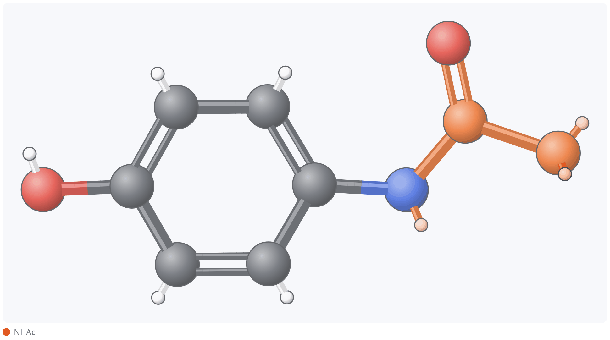
 nákres se zkratkouskupina rozkreslenáG: skupina jako zkratka
nákres se zkratkouskupina rozkreslenáG: skupina jako zkratkaKlíny se volí tak, aby R/S a E/Z zůstaly, jak jste je nakreslili, a podle vaší kresby se kontroluje i samotný 3D model. Model má i konformaci z nákresu: židlička (ze šablon, nebo nakreslená ručně a rozpoznaná) dá tutéž židličku (axiální OH zůstane axiální, i když je druhá židlička stabilnější), cyklohexan v Newmanově projekci tutéž židličku a Newmanova projekce řetězce nakreslený torzní úhel, i zákrytový. Dien nebo enon nakreslený s-cis (pro Dielsovu–Alderovu reakci) zůstane s-cis, i když je s-trans stabilnější. Když se taková konformace najít nedá, okno to napíše a ukáže jinou. Někdy pohled přehledně nakreslit nejde: klíny by neukazovaly správné R/S, nebo vazba míří skoro přímo na vás. Okno to pak napíše a z tlačítka bude Přesto použít: molekulu trochu pootočte, nebo pohled použijte, jak je.
Funguje to i s komplexy. Celý komplex se optimalizuje silovým polem (UFF), takže každý ligand si zachová správný tvar, chelatační ligandy jako EDTA se obtočí kolem kovu, porfyriny zůstanou rovné a kde se dvě vazby kříží, ta vzadu je přerušená. Když program pro molekulu 3D model nemá, řekne proč.

5.3 Překreslení jen části
Často je většina molekuly přesně taková, jakou ji chcete, a nepořádek je jen v jedné části: v postranním řetězci nebo ve vmáčknutém kruhu. Vyberte jen tuto část, obdélníkem, lasem nebo Shift+kliknutím, a klikněte na Překreslit.
Okno se pak otevře s vlastním oddílem Jen vybraná část, zbytek zůstane, kde je. V těchto nákresech se nic mimo výběr nepohne. Podle molekuly můžete vidět:
- Vybraná část překreslená 1 (2, 3…) nakreslí část znovu,
- Upravená vybraná část zachová její tvar a jen ji upraví,
- Vybraná část beze změny, znovu připojená ji nechá přesně tak, jak je nakreslená, a posadí ji zpět na místo, což se hodí, když jste ji odtáhli stranou.
Takhle také dostanete do 3D jen jednu část molekuly: otočte celou molekulu (oddíl 5.2) a pak překreslete tu část, kterou chcete mít plochou. Bornyl-salicylát níže vznikl právě tak. Bornan zůstal, jak byl otočený, a salicylát, jehož kruh byl po otočení vidět šikmo, je zase plochý.
Níž Celé molekuly nabízí obvyklé nákresy celé molekuly, kdybyste je chtěli radši. Příklad Překreslení části: zbytek zůstane, jak je nakreslený v nápovědě ukazuje rozdíl na jedné molekule.
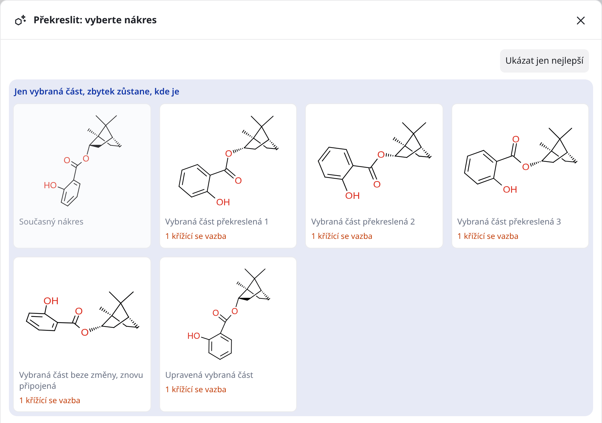
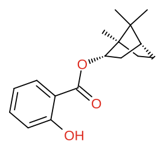
5.4 Zarovnat a mřížka
Vyberte několik molekul, klidně i šipek a textů, a otevřete Zarovnat:
- Zarovnat reakční schéma udělá z vybrané reakce jednu řadu: stejné mezery, vodorovné šipky, činidla jdou se svou šipkou a texty pod molekulami jsou na jednom řádku.
- Zarovnat srovná levé, pravé, horní nebo dolní okraje, nebo středy.
- Rovnoměrně rozmístit funguje vodorovně i svisle, se stejnými vzdálenostmi středů nebo se stejnými mezerami.
- Mřížka rozestaví molekuly do řad. Zadejte počet Sloupce (nebo nechte auto), případně Mezera mezi buňkami v délkách vazby (výchozí 1,25), a klikněte na Uspořádat do mřížky. Mřížka zůstane tam, kde byl výběr.
Molekuly spojené zahnutou šipkou se pohybují spolu. Text na kotvě jde vždy se svou molekulou a volné texty se zarovnávají samy.
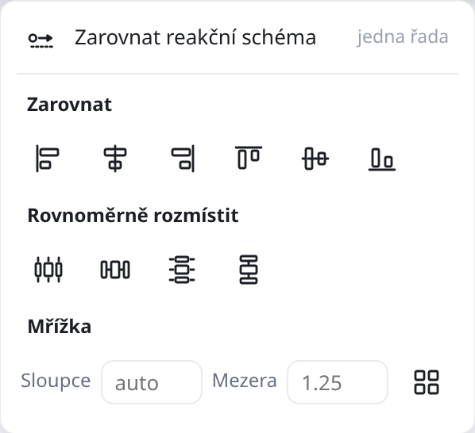
5.5 Překlopení a srovnání
- a v horní liště překlopí výběr, nebo bez výběru celou kresbu. Klíny se přitom prohodí, takže molekula zůstane stejná (R zůstane R).
- Překlopit přes vazbu : vyberte část molekuly, klikněte na tlačítko a pak na vazbu. Vybraná část se kolem vazby otočí jako kolem osy; bez výběru se otočí menší strana. Náhled zešedí, co se otočí, a modře ukáže, kam, a Esc to zruší. R/S zůstává.
Překlopení židličky
udělá z jedné židličky druhou, axiální ⇄ ekvatoriální: klikněte na tlačítko a pak na židličku (dovnitř kruhu nebo na některou jeho vazbu). Každá skupina zůstane na téže straně kruhu (nahoře, nebo dole), axiální skupina mířící nahoru se tedy stane ekvatoriální mířící nahoru a cis a trans, R/S i D nebo L zůstávají: β-D-glukosa se všemi skupinami ekvatoriálně se změní v židličku se všemi axiálně a je to pořád β-D-glukosa. Každý atom kruhu zůstane, kde byl (vlevo, vpravo, vzadu, vpředu), takže třída vidí, jak týž uhlík přejde z axiální polohy do ekvatoriální; skupina jako CH2OH nebo fenyl se otočí jako celek. Náhled modře ukáže druhou židličku. Překlopení je animované přes vaničku (jeden hrot klesne, pak druhý stoupne); Nastavení → Animace to vypne. Shift+kliknutí dá druhou židličku vedle první, mezi ně rovnovážnou šipku: obrázek do podkladů pro studenty. Další kliknutí židličku překlopí zpět; Esc skončí.Překlopit jde židlička ze šablon (Šablony → Konformace a projekce, otočená, zvětšená, zrcadlená nebo s přidanými skupinami) i nakreslená ručně, pokud ji program pozná (pod ukazatelem se zvýrazní zelenomodře). Překlopená se nakreslí ve tvaru šablony. Plochý šestičlenný kruh, šestiúhelník nebo Haworthova projekce, se změní na židličku: pod ukazatelem se zvýrazní zelenomodře a průhledně se nad ním ukáže židlička, kliknutí ji nakreslí. Každá skupina přijde do axiální nebo ekvatoriální polohy podle strany kruhu, kterou říká její klín nebo šrafovaný klín (u Haworthovy projekce nahoru, nebo dolů), takže molekula zůstane stejná. Vždy je to židlička ze šablon s levou špičkou nahoře (cukr ⁴C1, β-D-glukosa má všechny skupiny ekvatoriálně); druhou dá překlopení. Skupina, u které kresba neříká, na které straně je, přijde do ekvatoriální polohy a tam, kde sedí na stereocentru, dostane vlnovku. Kruh s dvojnou vazbou (cyklohexen) a kondenzované nebo přemostěné kruhy (dekaliny, steroidy) program odmítne a řekne proč.
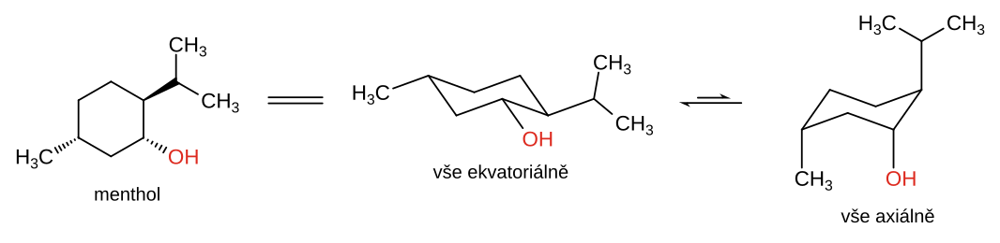
Obr. 33: Mentol nakreslený jako plochý kruh s klíny = jeho židlička, všechny skupiny ekvatoriálně; překlopením vznikne druhá židlička se všemi skupinami axiálně a rovnováha leží na straně první Překlopit jde i cyklohexan v Newmanově projekci ze šablony (viděný podél C1–C2 a C5–C4): obě projekce zůstanou na místě, C3 a C6 se přehodí na druhou stranu a každá skupina na čtyřech uhlících viděných z čela přejde do druhé polohy na téže straně kruhu, axiální ⇄ ekvatoriální. Trans-diaxiální Br a Cl tak budou diekvatoriální a ve 3D se z anti stanou gauche. Skupiny na C3 a C6 překlopení nedovolí.
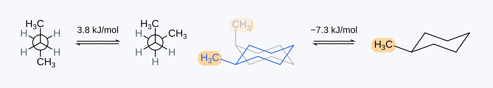
Obr. 34: Překlopení židličky: pod ukazatelem druhá židlička, modře a průhledně; klik ji nakreslí 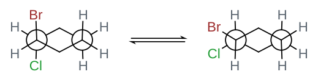
Obr. 35: Překlopení cyklohexanu v Newmanově projekci, Shift+kliknutím vedle původní: trans-diaxiální Br a Cl jsou teď diekvatoriální - Otočit židličku otočí židličku o třetinu otáčky kolem její osy, proti směru hodinových ručiček (se Shift po směru): každý atom kruhu se posune o dva rohy dál i se svými skupinami, které zůstanou axiální nebo ekvatoriální, nahoře nebo dole. Je to stejná molekula ve stejné konformaci, jen otočená; po třech otočeních je jako na začátku. Když se plochý kruh změní na židličku s atomy na jiných rozích, než jste chtěli, otáčejte ji, dokud nebudou tam, kde je chcete mít; druhou konformaci dá překlopení.
- Vodorovně / svisle srovná vazbu. Klikněte na tlačítko a pak na vazbu: otočí se výběr, pokud je vazba v něm, jinak celá molekula. Další kliknutí na vazbu otočí o čtvrt otáčky dál. S jednou vybranou vazbou se její molekula otočí hned po stisku tlačítka.
6 Číslování atomů a karta Info
6.1 Číslování IUPAC
Vyberte molekulu a v panelu zaškrtněte Číslování IUPAC. Hlavní řetězec nebo cyklus se očísluje podle pravidel IUPAC (doporučení z roku 2013) a čísla se přepočítají po každé změně: když na druhý konec hexanu přidáte Cl, C1 se přesune tam. Panel napíše, které pravidlo rozhodlo, například Číslováno tak, aby hlavní skupina (hydroxy (OH)) dostala nejnižší lokant: 2, ne 4.
Program umí vybrat hlavní řetězec nebo cyklus: podle nejvyšší hlavní skupiny (kyselina > ester > acylhalogenid > amid > nitril > aldehyd > keton > alkohol > thiol > amin), cyklus má přednost před řetězcem a pak rozhoduje nejdelší řetězec s nejvíce násobnými vazbami a substituenty.
Nejnižší lokanty dává heteroatomům v cyklu, hlavní skupině, násobným vazbám (dvojná před trojnou) a substituentům, nakonec rozhoduje abeceda (české názvy česky). Čísluje se jen základ, jako v názvu.
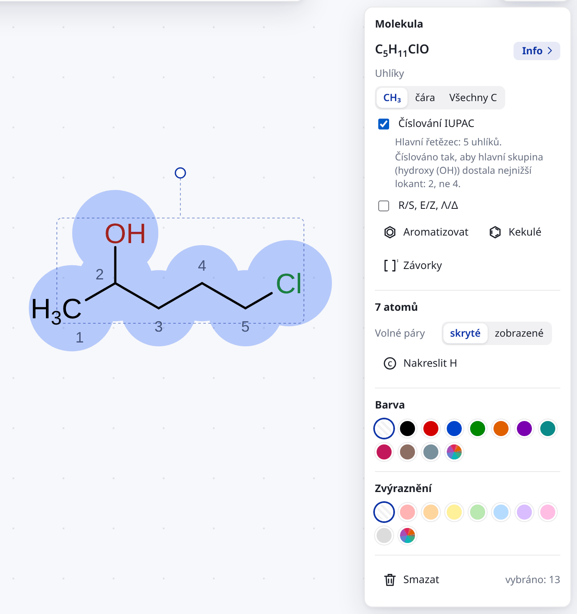
6.2 Vlastní čísla
Kondenzované, přemostěné a spiro cykly (naftalen, steroidy) mají vlastní číslování, které program neurčuje. Pro ně, a třeba pro přiřazení signálů v NMR, je tu nástroj čísla atomů  , varianta nástroje text. Klikejte na atomy v pořadí, v jakém je chcete očíslovat; další kliknutí číslo odebere.
, varianta nástroje text. Klikejte na atomy v pořadí, v jakém je chcete očíslovat; další kliknutí číslo odebere.
Číslo jednoho atomu změníte v poli Číslo v panelu, všechna najednou smaže Odebrat vlastní čísla. Čísla se ukládají do souborů olomolu, do odkazů a do obrázků.
6.3 Karta Info
Vyberte molekulu a v panelu klikněte na Info vedle vzorce. Vedle panelu se otevře karta s čísly, která se hodí do protokolu nebo experimentální části:
- Molární hmotnost a Přesná hmotnost,
- ionty pro HRMS: [M+H]+, [M+Na]+ a [M−H]− (u iontu [M]+),
- Elem. analýza (vypočt.) pro C, H, N a S,
- SMILES, InChI a InChIKey.
Kliknutím na řádek ho zkopírujete. Dostanete jen vzorec, ion a číslo, bez slov, takže se hodí do protokolu v jakémkoli jazyce: například C9H8O4 [M+H]+ 181.0495 nebo C9H8O4: C 60.00, H 4.48. Pak ho stačí vložit do textu.
Vše na kartě se počítá ve vašem počítači. Karta se zavře, když vyberete jinou molekulu nebo kliknete na prázdné plátno.
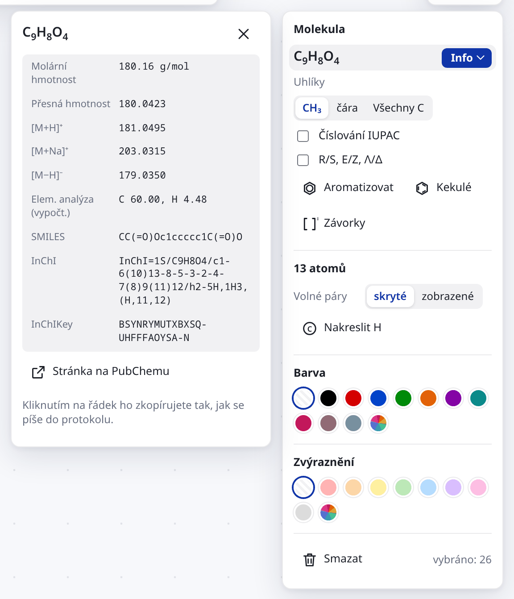
6.4 Hledání sloučeniny na PubChemu
Stránka na PubChemu na kartě Info otevře stránku sloučeniny v databázi PubChem. Je to jediná věc na kartě, která něco posílá ven: InChIKey molekuly, podle kterého ji PubChem najde, a když PubChem nemá přesnou shodu, i její SMILES.
Co nakreslíte, nemusí být přesně to, co má PubChem. Třeba jste nechali stereocentrum neurčené nebo jste nakreslili izotop. olomol pak nehádá, ale ukáže stránku s kartami kandidátů, každou s obrázkem z PubChemu, názvem a číslem. Kliknutím na kartu přejdete na tu sloučeninu. Nadpis říká, v čem se liší:
- Stereochemie není úplně určená: PubChem ji má přesně tak, jak jste ji nakreslili (první karta, označená jak je nakreslená), a ostatní určují víc, v souladu s vaší kresbou. Často je to některá z nich, co jste mysleli.
- Žádná přesná shoda pro tuto stereochemii: přesnou shodu PubChem nemá, ale tyto sloučeniny souhlasí se stereocentry, která jste nakreslili.
- Tento stereoizomer na PubChemu není: tyto sloučeniny mají stejnou konstituci, ale jinou stereochemii.
- Žádná přesná shoda pro toto izotopové značení: tyto sloučeniny mají stejnou konstituci, ale jiné značení nebo žádné.
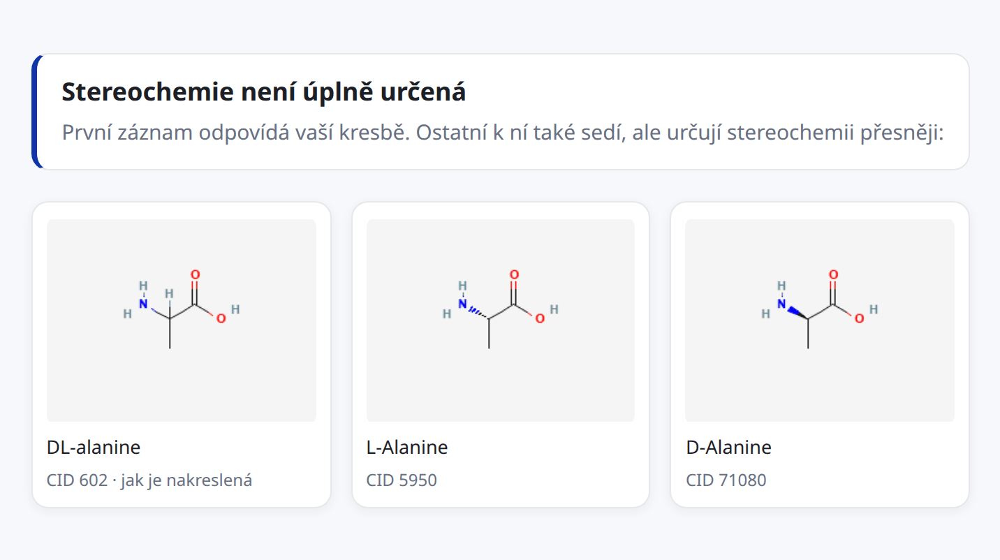
Když PubChem nemá vůbec nic, stránka to řekne a nabídne Hledat na PubChemu.
7 Barvy a zvýraznění
7.1 Barva
Barva mění čáry a písmo. Vyberte atomy, vazby, šipky nebo text a v panelu klikněte na barvu v části Barva přeškrtnuté kolečko je Výchozí barva. Nebo použijte nástroj  vlevo dole, s deseti barvami ve variantách, a klikejte nebo orámujte, co se má obarvit.
vlevo dole, s deseti barvami ve variantách, a klikejte nebo orámujte, co se má obarvit.
Duhové kolečko na konci barev (Další barvy nebo kód barvy) otevře větší výběr: řádek Naposledy použité, mřížku Barvy a pole pro kód barvy (#cc0055, #c05, rgb(204, 0, 85) nebo název jako teal; Enter ho použije). Kolečko vedle pole otevře výběr barvy systému. Použité barvy si program pamatuje a nabídne je pak i mezi barvami nástroje a panelu.
Když v Nastavení přepnete Barvy atomů na Černé, prvky se kreslí černě, ale vaše vlastní barvy zůstanou, takže červené šipky na černých strukturách zůstanou červené.
7.2 Zvýraznění a vyplněné kruhy
Zvýraznění je měkký barevný podklad za atomy a vazbami, jak ho kreslí RDKit. Hodí se k označení skupiny, reakčního centra nebo společné části několika molekul.
Použijte zvýrazňovač úplně dole vlevo, s osmi barvami. Klikněte na atomy a vazby nebo je orámujte; další kliknutí zvýraznění zruší. V panelu je totéž v části Zvýraznění a i tady duhové kolečko nabízí další, světlé barvy.
Kliknutí dovnitř kruhu kruh vyplní barvou. Kolem napsaných atomů (O, N, CH2) zůstane kulatý výřez, aby barva nešla přes písmena.
Nástrojem výběr  kliknutí do vyplněného kruhu vybere kruh, dvojklik celou molekulu a tažením ji posunete. Menší zvýraznění leží vždy nad větším (oranžová odlišnost nad modrou společnou částí).
kliknutí do vyplněného kruhu vybere kruh, dvojklik celou molekulu a tažením ji posunete. Menší zvýraznění leží vždy nad větším (oranžová odlišnost nad modrou společnou částí).
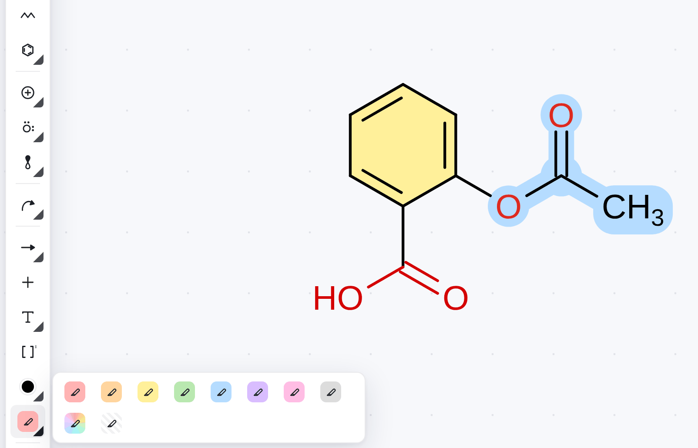
Vyplnění zmizí, když kruh rozbijete smazáním atomu nebo vazby kruhu. Jinak ho odstraníte variantou Bez zvýraznění zvýrazňovače (kliknutím do kruhu), gumou (kliknutím do kruhu), nebo Bez zvýraznění v panelu, když jsou vybrané všechny atomy kruhu.
7.3 Příklad: co mají molekuly společného
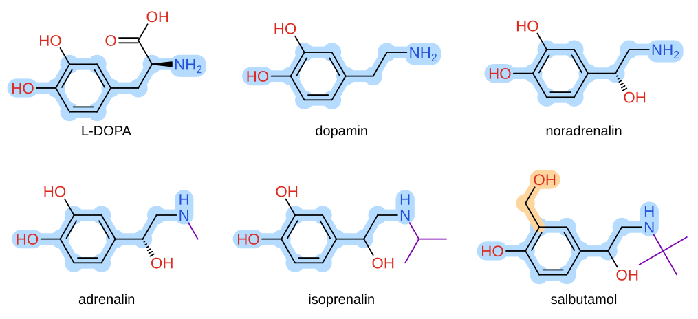
L-DOPA, dopamin, noradrenalin a adrenalin vznikají v těle jeden z druhého, isoprenalin a salbutamol jsou léčiva. Společná část, fenol s řetězcem C–C–N, je zvýrazněná modře a ve všech molekulách stejně natočená. Salbutamol, lék na astma, má oranžově zvýrazněnou hlavní odlišnost: místo jedné skupiny OH má CH2OH, takže ho enzym COMT neodbourává a působí hodiny, ne minuty. Skupiny na dusíku jsou obarvené fialově nástrojem Obarvit: čím větší skupina, tím víc látka působí na β-receptory.
Takový obrázek vytvoříte takto:
- Nakreslete první molekulu, zkopírujte ji (Ctrl+C, Ctrl+V) a kopii upravte. Společná část tak zůstane všude stejně natočená, což by u molekul vložených ze SMILES neplatilo.
- Vyberte vše, v Zarovnat zadejte 3 Sloupce a klikněte na Uspořádat do mřížky.
- Společnou část vyberte (tažením obdélníku, Shift+kliknutím) a v panelu klikněte na modré Zvýraznění. Stejně to udělejte s oranžovou pro odlišnost.
- Skupiny na dusíku obarvěte nástrojem
 nebo v panelu přes Barva.
nebo v panelu přes Barva.
8 Soubory, karty, export a odkazy
Cesta ven z olomolu záleží na tom, co chcete dělat dál:
| Chcete… | Použijte |
|---|---|
| dál pracovat na kresbě později | Uložit (Ctrl+S): kresba olomolu (.olom) se vším všudy |
| dát ji do Wordu, PowerPointu nebo Dokumentů Google | Kopírovat jako obrázek (Ctrl+Shift+C), pak tam Ctrl+V |
| vytisknout ji nebo z ní udělat PDF | Export → PDF / Tisk… |
| dál ji upravovat v Inkscapu | SVG |
| poslat ji kolegovi nebo studentům | Kopírovat odkaz, nebo soubor .olom |
| ukázat ji na přednášce | Promítat (oddíl 8.3) |
| otevřít ji v programu Ketcher | Soubor se strukturou: KET |
| otevřít ji v ChemDraw nebo jiném chemickém programu | Soubor se strukturou: Molfile, SDF, SMILES nebo InChI |
| začít z ní výpočet | Soubor se strukturou: XYZ |
8.1 Uložit a otevřít
Uložit  (Ctrl+S) uloží kresbu jako kresbu olomolu, soubor
(Ctrl+S) uloží kresbu jako kresbu olomolu, soubor .olom. Ten se tu zase otevře se vším: volnými páry, zahnutými šipkami, barvami, zvýrazněním, čísly, skupinami i stylem kresby. Pro vlastní práci je to nejlepší volba. (Název je zkratka anglického Olomol Layout Object Model, tedy model rozvržení objektů olomolu; víc v oddíl A.4.)
Jako v textovém editoru zná kresba svůj soubor. V Chromu a Edgi ji Ctrl+S zapíše zpět do téhož souboru bez ptaní (prohlížeč se jednou za návštěvu zeptá, zda smí), a Ctrl+Shift+S (Uložit jako) se zeptá na nový název a složku. Tečka na tlačítku uložení a na kartě kresby znamená změny, které ještě nejsou v souboru. Soubor, který zapsal jiný program (KET, CDXML, molfile), se nikdy nepřepíše: Ctrl+S se pak zeptá, kam kresbu uložit jako .olom. Pokud se soubor od otevření změnil (v jiném programu nebo jiné kartě), olomol se před přepsáním zeptá. Firefox a Safari do souborů zapisovat neumějí, takže je stahují: poprvé pod názvem, který zadáte, pak znovu pod týmž, do složky stažených souborů.
Otevřít (Ctrl+O) přečte kresby olomolu (.olom), KET, molfile, SDF, SMILES, RXN, CDXML a CDX (ChemDraw), CML a XYZ. Obrázek exportovaný z olomolu (SVG nebo PNG) nese kresbu v sobě, takže se otevře zase jako kresba, ne jako obrázek. Jakmile jste už nějaké soubory otevřeli, nabídne Otevřít nejdřív nedávné soubory a pod nimi Otevřít soubor z tohoto počítače…. Soubory jde i přetáhnout do okna a nainstalovaná aplikace (oddíl 10.1) otevírá soubory .olom přímo ze správce souborů.
Kresba (.olom, KET, reakce, CDXML) se otevře ve vlastní kartě (oddíl 8.2). Soubor jen s molekulami (molfile, SDF, SMILES, XYZ) se vloží do kresby, kterou máte, jako šablona: klikněte, kam má přijít, nebo skončí tam, kam jste ho přetáhli. Ze souborů ChemDraw zůstanou zkratky (OMe, OTBS, Et) zkratkami, vodíky napsané u atomu zůstanou tak, jak jsou napsané, a místo připojení (vlnovka přes vazbu) se stane R. Reakce ze souboru RXN se srovná jako přes Zarovnat reakční schéma, činidla na šipku. Soubor XYZ z kvantově chemického programu nemá vazby, takže je program doplní podle vzdáleností atomů, určí řády vazeb a stereochemii a molekulu nakreslí ve 2D.
8.2 Více kreseb: karty
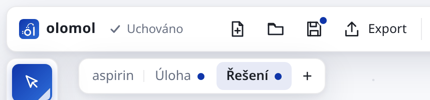
Každá kresba se otevře ve vlastní kartě, s vlastním krokem zpět, souborem i zobrazením, takže úloha a její řešení nebo schéma a molekuly k němu leží vedle sebe. Karty se objeví pod horní lištou, jakmile jsou kresby dvě; název kresby je pak na její kartě.
- Kliknutí na kartu ukáže její kresbu, dvojklik na kartu vpředu ji přejmenuje a kartu přetažením přesunete mezi ostatními.
 na kartě nebo kliknutí prostředním tlačítkem kresbu zavře; má-li změny, které nejsou v souboru, olomol se nejdřív zeptá. + na konci karet (nebo ) začne novou kresbu.
na kartě nebo kliknutí prostředním tlačítkem kresbu zavře; má-li změny, které nejsou v souboru, olomol se nejdřív zeptá. + na konci karet (nebo ) začne novou kresbu.- Pravé tlačítko na kartě nabídne Duplikovat kresbu (kopii v nové kartě, třeba z úlohy pro její řešení), Přejmenovat a Zavřít.
- V nainstalované aplikaci přepínají Ctrl+Tab a Ctrl+Shift+Tab na další a předchozí kresbu (v prohlížeči tyto klávesy patří jeho vlastním kartám).
Všechny otevřené kresby se uchovávají a příště jsou zpátky (oddíl 1.5). Příklad Úloha a její řešení: karty a Promítat v nápovědě to všechno ukazuje na jedné úloze.
8.3 Promítání: kresby přes celou obrazovku
Promítat , poslední tlačítko horní lišty, ukáže otevřené kresby přes celou obrazovku, bez lišt a panelů, každou zvětšenou na celou plochu: přesně pro přednášku nebo seminář. →, ↓, Mezerník nebo Page Down (co posílá prezentér) ukáže další kresbu, ←, ↑ nebo Page Up předchozí, Home a End první a poslední. Když pohnete myší, objeví se dole malá lišta s číslem a názvem kresby a tlačítky zpět a dál. Esc vás vrátí ke kreslení a každá kresba je, jak byla. Mezitím nejde nic měnit; kolečko myši ale dál zvětšuje.
Dejte každý krok do vlastní karty, napřed úlohu a za ni řešení, a promítání je projde popořadě.
8.4 Export obrázků a souborů
Nabídka Export v horní liště nabízí:
- SVG (vektorový, pro Inkscape): čistý vektorový obrázek, ve kterém text zůstane textem. Nejlepší volba pro tisk, plakáty a další úpravy.
- PNG (4× rozlišení): obrázek v rastru s průhledným pozadím, nebo bílým, když zaškrtnete Bílé pozadí. Nese svou velikost, takže ho Word a PowerPoint vloží tak velký, jak určuje styl kresby.
- Kopírovat jako obrázek (Ctrl+Shift+C): PNG do schránky a vedle něj SVG pro programy, které ho umějí; průhledný nebo s Bílé pozadí.
- PDF / Tisk…: kresba sama na stránce, ve velikosti podle svého stylu a menší jen tehdy, když se nevejde, široká na šířku. V okně tisku prohlížeče zvolte Uložit jako PDF pro vektorové PDF, nebo tiskárnu.
- Kopírovat odkaz: viz oddíl 8.6.
- Soubor se strukturou: KET (pro Ketcher), Molfile, SDF, SMILES, InChI a XYZ (3D souřadnice). U formátu nabídka napíše, co z kresby neudrží (bez: zahnuté šipky, barvy…).
Když je něco vybrané, je zaškrtnuté Jen výběr a exportuje se jen výběr. Odškrtnutím exportujete celou kresbu.
Obrázky SVG a PNG z olomolu nesou neviditelně v sobě i kresbu, takže Otevřít nebo přetažení obrázku do okna vrátí samotnou kresbu. Program, který obrázek upravuje, ji může zahodit, a obrázek zkopírovaný do schránky ji nemá.
Soubory se strukturou nesou atomy, polohy, náboje, izotopy, radikály a klíny ve standardních formátech. Jejich čtení zpět je vyzkoušené v olomolu, v RDKit a v Indigu, ne v jiných programech. Volné páry, zahnuté šipky, závorky, částečné vazby a barvy se ale zachovají jen ve vlastních souborech olomolu, v odkazech a v obrázcích. KET jich pro Ketcher udrží nejvíc: zkratky jako jeho skupiny a Haworthovy a Fischerovy projekce i se stereochemií jako klíny.
Soubor XYZ obsahuje 3D souřadnice se všemi vodíky. Je to výchozí geometrie pro výpočty (Gaussian, ORCA a podobně), optimalizovaná jen silovým polem, ne kvantovou chemií. Komplex kovu se postaví stejně jako v Otočit ve 3D, celý optimalizovaný univerzálním silovým polem (UFF) na svém koordinačním mnohostěnu; UFF dává vazby kov–ligand o něco kratší než skutečné (Zn–N v ZnTPP 1,95 Å místo 2,04 Å). Komplex, který Otočit ve 3D postavit neumí (ferrocen), se do souboru nezapíše a program napíše proč. Souřadnice se počítají na pozadí: panel ukazuje, že výpočet běží, a vy můžete kreslit dál. Až budou hotové, uložíte je tlačítkem Uložit soubor XYZ, a to pro kresbu v podobě, v jaké byla při zadání. Jako název souboru se nabídne InChIKey molekuly, takže se soubory z jedné kresby navzájem nepřepíší. Všimněte si upozornění na stereocentra bez nakresleného R/S: soubor pak obsahuje jen jeden z možných stereoizomerů.
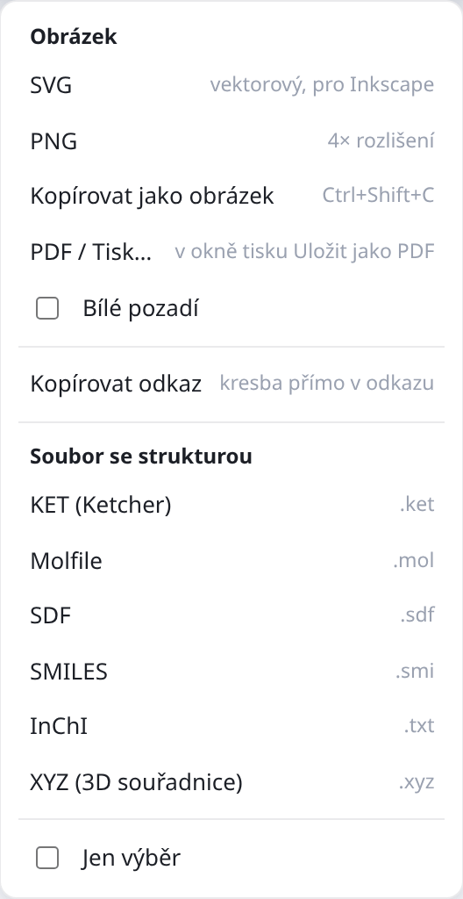
8.5 Do Wordu, PowerPointu a Dokumentů Google
Vyberte, co chcete přenést, nebo nic, pak se vezme celá kresba. Stiskněte Ctrl+Shift+C, nebo zvolte Export → Kopírovat jako obrázek, a pak ve Wordu, PowerPointu nebo Dokumentech Google stiskněte Ctrl+V.
Nejostřejší je v tištěné práci SVG: Word i PowerPoint ho vloží (Vložení → Obrázky) a při zvětšení se nerozmaže. Pro časopis zvolte nejdřív jeho styl (Nastavení → Styl: ACS, RSC nebo vlastní, kapitola 9) a obrázky vyjdou ve velikosti, jakou žádá.
8.6 Odkazy
Export → Kopírovat odkaz vytvoří odkaz, ve kterém je celá kresba přímo uložená, za znakem #, který prohlížeč na server neposílá. Kdo ho otevře, uvidí vaši kresbu a jeho vlastní se mu vrátí přes Ctrl+Z. Dlouhé odkazy některé chatovací programy zkrátí; pak pošlete soubor .olom.
Odkaz se strukturou. Odkaz může také říct, jakou strukturu nakreslit, napsaný ručně, v pracovním listu nebo chatbotem: olomol.org/#smiles=CCO nakreslí ethanol, #name=caffeine vyhledá název na PubChemu a fungují i #inchi=… a #cid=2244. &title=… kresbu pojmenuje a víc struktur se otevře každá ve vlastní kartě, popořadě: #title=Úloha&smiles=C=CC.Br&title=Řešení&smiles=CC(Br)C je úloha a za ní její řešení, připravené pro Promítat. Reakční SMILES (výchozí látky>činidla>produkty) se nakreslí jako reakce. Nainstalovaná aplikace nemá adresní řádek: takový odkaz vložte do vyhledávacího řádku (oddíl 3.5). Chatboti se psát takové odkazy naučí z olomol.org/llms.txt.
9 Nastavení a klávesové zkratky
9.1 Vzhled kresby, jazyk a okno
Vzhled nejvíc mění, jak se kreslí náboje, volné páry a barvy atomů. Vpravo je tentýž glycin ve výchozím vzhledu a s náboji v kroužku, volnými páry jako čárky (Lewis) a černými atomy. Styl, náboje a volné páry patří ke kresbě a ukládají se do jejího souboru; ostatní nastavení platí pro všechny kresby. Všechno se projeví i v exportovaných obrázcích.

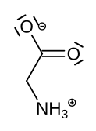
Nastavení ( vpravo nahoře):
Kresba
Styl této kresby: Obrazovka, ACS (ACS Document 1996 z ChemDraw: vazby 14,4 pt, čáry 0,6 pt, Arial 10 pt), RSC (12,2 pt, 0,5 pt, Arial 7 pt), Prezentace (silnější, pro projektor) nebo Vlastní… (viz níže). Obrázky a PDF vyjdou ve velikosti podle stylu.
- Náboje: + −, nebo v kroužku ⊕ ⊖.
- Volné páry: Tečky ··, nebo Čárky (Lewis).
- Použít pro nové kresby (je tam, když se styl této kresby liší): v tomto stylu začnou nové kresby i soubory, které styl neříkají.
- Barvy atomů: Podle prvku, nebo Černé (vlastní barvy zůstanou).
- Uhlíky: CH3, Jen čára, nebo Všechny C pro nové kresby.
- Aromáty: Kroužek, nebo Čárkovaně (kroužek čárkovaný).
- Koordinace: → (šipka od donoru), nebo Čára (obyčejné čáry, jak se komplexy často kreslí); do hloubky jsou to klíny tak jako tak.
- Pojítka: skryté, nebo zobrazené (neviditelná pojítka z Jedna sloučenina, jen na obrazovce).
- Nové šipky: barva nových zahnutých šipek.
Okno
- Jazyk: tlačítka s vlajkami EN, CS, DE. Bez volby se vezme jazyk prohlížeče, a když ho program nemá, angličtina. Stránka se znovu načte a kresba i s jejím zvětšením a polohou zůstane. Šablony jdou hledat česky i anglicky; PubChem zná jen anglické názvy. Jazyk vybere i konec adresy:
?lang=cs,?lang=ennebo?lang=de. - Vzhled: Auto (podle systému), Světlý, nebo Tmavý.
- Animace: Zap. nebo Vyp., krátké animace jako překlopení židličky. Dokud nevyberete, řídí se systémem: vypnuté, když systém žádá méně pohybu.
- Ladění: ladicí režim ukazuje, jak program rozhodl (metody rozvržení, rámečky popisků, kandidáty šipek). Je pro vývojáře, ale když hlásíte chybu v kreslení, může pomoct snímek obrazovky s ním.
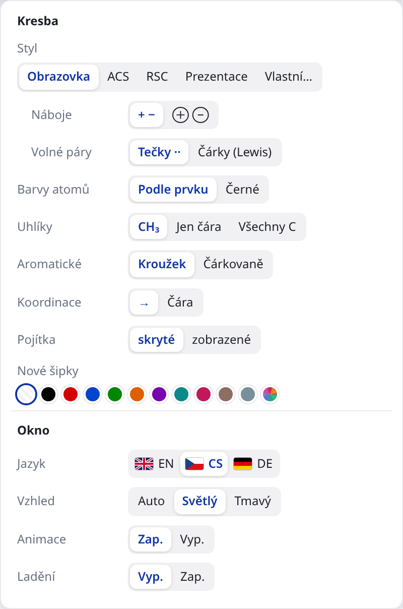
Vlastní styl. Vlastní… otevře okno Styl kresby pro rozměry, které žádá časopis nebo vaše skupina, v bodech: Délka vazby, Čáry, Tučné vazby, klíny, Rozestup šrafování, Okraj kolem popisků, Popisky a texty a Písmo, bezpatkové (Arial) nebo patkové (Times). Vyjít z vyplní ACS 1996 nebo RSC jako výchozí bod. Molekula vedle se při psaní kreslí ve skutečné velikosti; Použít dá kresbě tento styl. Příklad Vzhled podle časopisu: ACS, RSC nebo vlastní styl v nápovědě ukazuje jednu kresbu v každém.
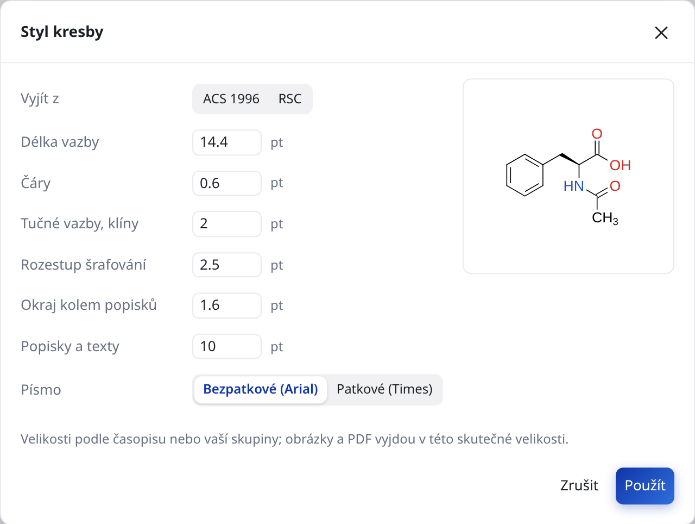
9.2 Klávesové zkratky
Přehled ukáže také klávesa ? nebo Klávesové zkratky v nápovědě (oddíl 1.4). Písmena a číslice dělají něco jiného podle toho, co je pod myší: atom, vazba, nebo prázdné místo.
Nad atomem
| C N O S P F H I | změní prvek |
| L B | Cl, Br |
| + − | náboj |
| . | nepárový elektron (znovu: dva u sebe, pak žádný) |
| : | volné páry zap./vyp. |
| Del | smaže ho |
Nad vazbou
| 1 2 3 | jednoduchá, dvojná, trojná |
| 1 znovu | plný klín, šrafovaný klín, oba z druhého konce, obyčejná |
| Shift+1 | totéž pozpátku |
| D | koordinační vazba, znovu vodíková, znovu částečná |
| Del | smaže vazbu |
S výběrem (ukazatel nad ním nebo nad prázdným místem)
| + − | náboj všech vybraných atomů |
| 1 2 3 | všechny vybrané vazby jednoduché, dvojné, trojné |
| : | volné páry vybraných atomů zap./vyp. |
V okně Otočit ve 3D
| Šipky | otočit (Shift: v rovině stránky) |
| S | tyčinkový model a zpět |
| G | v tyčinkovém modelu: rozkreslit skupiny |
| H | v tyčinkovém modelu: malé vodíky |
| Enter | Použít tento pohled |
| Esc | zavřít okno |
Při psaní textu
| Enter Esc | dokončit |
| Shift+Enter | nový řádek |
| Ctrl+, Ctrl+. | dolní, horní index |
| Ctrl+B Ctrl+I | tučně, kurzívou |
Nástroje (ukazatel nad prázdným místem)
| V | |
| E | |
| N | kreslit dusíkem (stejně O, S, P, F, H, I, L = Cl, B = Br; C: zase uhlík) |
| 1 | |
| 2 | dvojná vazba |
| 3 | trojná vazba |
| Z | řetězec (cik-cak) |
| R | |
| 5 | 5členný kruh |
| 6 | 6členný kruh |
| + | |
| − | |
| . | |
| : | volné páry |
| A | zahnutá šipka (elektronový pár) |
| Shift+A | |
| Shift+T | Šablony |
| X | |
| T | text |
| K | |
| D | koordinační vazba, znovu vodíková, znovu částečná |
Kdekoli
| Esc | zrušit; znovu: nástroj výběr; znovu: nic vybraného; znovu: obdélník nebo laso |
| Ctrl+Z Ctrl+Shift+Z Ctrl+Y | zpět, znovu |
| Ctrl+C Ctrl+X Ctrl+V | kopírovat, vyjmout, vložit (i SMILES a molfile) |
| Ctrl+Shift+C | kopírovat jako obrázek (PNG), pro Word, PowerPoint, Dokumenty |
| Ctrl+A | vybrat vše |
| Ctrl+G Ctrl+Shift+G | seskupit výběr, rozdělit skupinu (o jednu úroveň) |
| Ctrl+kliknutí | skupina (znovu: skupina kolem ní); Ctrl+tažení ji posune, Ctrl+tažení obdélníku vezme celé skupiny |
| Del | smazat výběr |
| Šipky | posunout výběr (Shift: dál) |
| Ctrl+S Ctrl+O | uložit, otevřít |
| Ctrl+Shift+S | uložit jako jiný soubor |
| Ctrl+Tab Ctrl+Shift+Tab | další kresba, předchozí (v nainstalované aplikaci) |
| Ctrl+kolečko | přiblížit |
| mezerník+tažení | posunout |
| / | vyhledávací řádek: název, SMILES, InChI nebo co chcete udělat |
| ? | tento přehled |
Při promítání
| → ↓ Mezerník Page Down | další kresba |
| ← ↑ Page Up | předchozí |
| Home End | první, poslední |
| Esc | zpět ke kreslení |
10 Instalace, omezení a hlášení chyb
10.1 Instalace jako aplikace a práce offline
Po prvním otevření funguje olomol i bez internetu, protože prohlížeč si všechny jeho soubory pamatuje. Bez připojení nefunguje jen hledání na PubChemu.
Nainstalovaný jako aplikace má vlastní okno a ikonu na ploše nebo v nabídce Start a otevře se hned:
- Chrome a Edge: použijte tlačítko vpravo nahoře (první ikona na obrázku), nebo ikonu instalace v adresním řádku.
- Firefox v Linuxu ho jako aplikaci nainstalovat neumí, ale program v něm normálně funguje v okně prohlížeče, i offline.

10.2 Známá omezení
olomol je zkušební verze. Tohle zatím neumí, nebo umí jen zčásti:
- Firefox v Linuxu neumí program nainstalovat jako aplikaci. Použijte Chrome nebo Edge, nebo pracujte v okně prohlížeče.
- Nákresy komplexů kovů a molekul s rozšířeným oktetem z 3D modelu v Překreslit jsou experimentální: někdy vypadají zvláštně nebo se vůbec nenabídnou. Export XYZ je jen výchozí geometrie optimalizovaná silovým polem.
- Název ze struktury program vytvořit neumí. Opačný směr, struktura z názvu, jde přes PubChem, tedy s internetem a s anglickými názvy.
- Číslování IUPAC zvládne hlavní řetězec a jednoduché cykly. Kondenzované, přemostěné a spiro cykly je třeba očíslovat ručně nástrojem čísla atomů
 .
. - Volné páry, zahnuté šipky, závorky, zvláštní vazby a barvy nesou jen vlastní soubory olomolu (.olom), odkazy a obrázky a z větší části i KET, ne molfile nebo SMILES.
- Židličky dávají stereochemii, jen když stojí samy (ne kondenzované ani přemostěné); vaničky ji nedávají vůbec. Překlopení židličky a Otočit židličku odmítnou kondenzované a přemostěné kruhy a kruhy s dvojnou vazbou.
- Kopírování obrázků do schránky některé prohlížeče nedovolí. Program to oznámí; pak exportujte PNG.
- Kresby v prohlížeči jsou jen v tomto prohlížeči na tomto počítači a mezi počítači se nesynchronizují. Přenesete je souborem .olom nebo odkazem.
- Zápis zpět do souboru (Ctrl+S bez ptaní) umí Chrome a Edge. Firefox a Safari soubor místo toho stáhnou (kapitola 8).
10.3 Problémy a nápady
Budeme rádi za každou zprávu, i za drobnost. Klikněte na brouka  vpravo nahoře (nebo na Nahlásit problém nebo nápad v nápovědě). Otevře se okno s tabulkou toho, co pomůže chybu najít: verze programu, prohlížeč, systém, velikost okna, a když necháte zaškrtnuté S kresbou (odkaz, ve kterém je celá, abych viděl, co vy), i odkaz na kresbu.
vpravo nahoře (nebo na Nahlásit problém nebo nápad v nápovědě). Otevře se okno s tabulkou toho, co pomůže chybu najít: verze programu, prohlížeč, systém, velikost okna, a když necháte zaškrtnuté S kresbou (odkaz, ve kterém je celá, abych viděl, co vy), i odkaz na kresbu.
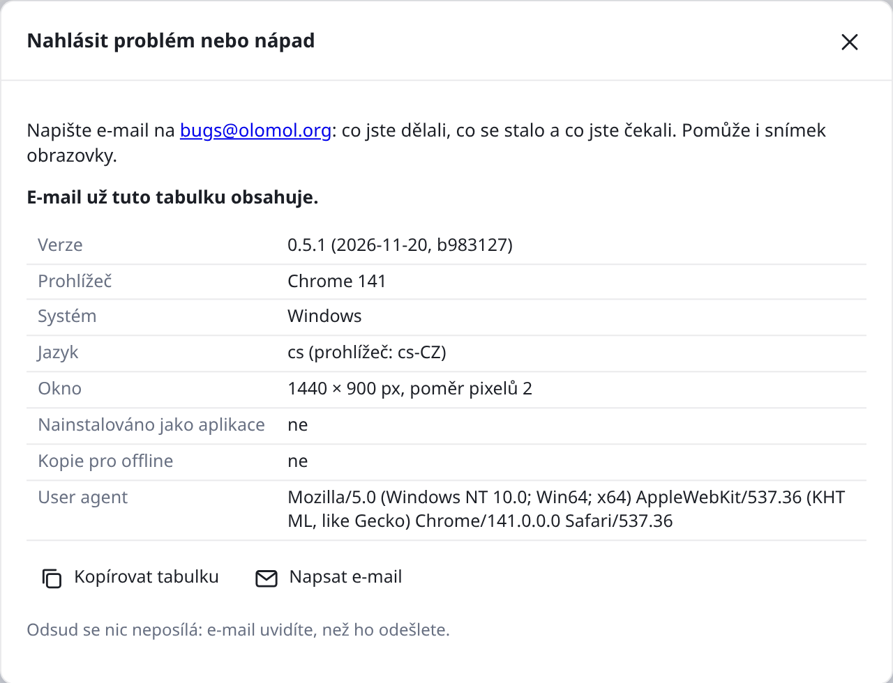
- Klikněte na Napsat e-mail. Otevře se nový e-mail na adresu bugs@olomol.org s pár otázkami, na které stačí odpovědět: co jste dělali (klidně stručně), co se stalo a co jste čekali. Tabulka v něm už je.
- Odkaz na kresbu je na e-mail moc dlouhý, takže s kresbou klikněte na Kopírovat tabulku a tabulku vložte (Ctrl+V) na konec e-mailu.
- Pomůže i snímek obrazovky nebo soubor kresby .olom.
Odsud se nic neposílá: e-mail uvidíte a odešlete sami. Když se po kliknutí žádný e-mail neotevře (třeba používáte jen webovou poštu), napište na adresu ručně a tabulku vložte stejně. Verzi programu najdete také vlevo dole a v okně O aplikaci.
A Jak je olomol postavený
Tato příloha je pro ty, kdo chtějí vědět, co je pod kapotou: učitele informatiky, správce školní sítě, vývojáře a zvídavé chemiky. K používání programu ji číst nemusíte.
A.1 Celkový pohled
olomol je statická webová stránka: HTML, JavaScript a WebAssembly, nic víc. Nepotřebuje server s programem, databázi ani účty. Stačí jakýkoli webový prostor s https (školní server, GitHub Pages) a všechno ostatní běží v prohlížeči uživatele. Vlastní kód má asi 33 000 řádků JavaScriptu.
Obrazovka · src/ui
lišty, karty, panel, nabídky, dialogy, vyhledávací řádek, karta Info (React 19)Editor · src/editor
nástroje, výběr, zpět a znovu, pohled, myš a klávesyUspořádání · src/arrange
zarovnat, rozmístit, mřížka, reakční schémaRozvržení · src/layout
metody rozvržení, šablony kruhů, kontrola, 3DKresba · src/model
atomy, vazby, reakční a zahnuté šipky, texty, závorky, výplně: prostá data, kopie pro „zpět“ je structuredCloneChemie · src/chem
vodíky a volné páry, vzorec a hmotnosti, R/S, číslování IUPAC, šablonyVykreslení · src/render
scéna: popisky, vazby, elektrony, pravidla šipek; plátno a SVGSoubory · src/io
.olom, KET, molfile, převody, odkazy, PubChemRDKit.js, megane-rdkit
SMILES, InChI, rozvržení, CIP (R/S, E/Z), kanonické SMILES; 3D struktury (ETKDG, MMFF94s)Indigo (vlastní vlákno)
RXN, CDXML, CDX, SDF, CML, rozvržení KetcheruOpenChemLib
3D struktury tam, kde je RDKit neudělá, silové pole MMFF94s+Prohlížeč
IndexedDB (kresby, dřívější verze, nedávné soubory) · localStorage (nastavení) · service worker (offline) · schránka
src/), zelená řada jsou knihovny ve WebAssembly, které se stahují, až když jsou poprvé potřeba.A.2 Co dělá která část
| Složka | Co v ní je |
|---|---|
src/model | Kresba jako data. Souřadnice jsou v délkách vazby, osa y míří dolů jako na obrazovce. graph.js: molekuly (souvislé části), nejmenší kruhy. |
src/chem | Chemie počítaná vlastním kódem: vodíky a volné páry (valence.js), vzorec a hmotnosti, označení R/S, číslování IUPAC (numbering.js), šablony, židličky a projekce, delokalizované skupiny (COO−, NO2). |
src/render | Po každé změně se jednou spočítá scéna: kde jsou popisky, jak vypadají vazby, kam jdou volné páry a kudy vedou zahnuté šipky. Z ní kreslí plátno, export SVG i hledání toho, co je pod myší. Obrázky v příručce jsou exporty téže scény. |
src/editor | Editor a nástroje: výběr, tažení, vazby, kruhy, šablony, historie (200 kroků), klávesy. |
src/arrange, src/layout | Zarovnání a nové rozvržení: několik metod (RDKit, CoordGen, Indigo, šablony kruhových systémů RDKit, 3D z RDKit nebo OpenChemLib, komplexy kovů silovým polem UFF), každý nákres celé molekuly natočený do mřížky po 30°. |
src/io | Soubory: vlastní .olom a KET (čtení i zápis), molfile V2000/V3000, převody přes RDKit a Indigo, XYZ, kresba uvnitř obrázků, odkazy, PubChem, tisk. |
src/ui | Obrazovka v Reactu: lišty, karty, panel, nabídky, dialogy, vyhledávací řádek, promítání, karta Info. |
src/i18n | Jazyky. Klíčem je anglický text, cs.js a de.js jsou překladové tabulky; test hlásí chybějící texty. |
A.3 Pravidla, která nejsou z knihoven
- Volné páry se počítají jako valenční elektrony − náboj − vazby − vodíky − nepárové elektrony. Testy ověřují, že vycházejí stejné počty jako v RDKit.
- Zahnuté šipky se nekreslí ručně: pro každou šipku program vytvoří stovky kandidátních Bézierových křivek a každé spočítá „cenu“. Platí se za průchod popiskem, vazbou, volným párem, vnitřkem kruhu nebo jinou šipkou, za ohyb, který nesedí k délce šipky (krátké se ohýbají víc, dlouhé méně), za nesouměrný oblouk a u nové vazby za hrot, který nepřichází ze strany elektronů. Vyhraje nejlevnější; tlačítko Jinak vybírá další, která vypadá jinak. Ladicí režim (Nastavení → Ladění) ukáže kandidáty i s cenou.
- Nové rozvržení nikdy nezmění molekulu: každý nákres se převede na kanonický SMILES včetně stereochemie a porovná s původním. Co se liší, se zahodí.
- Číslování IUPAC jde podle doporučení IUPAC 2013 (hlavní řetězec nebo cyklus, nejnižší lokanty, abeceda) a k číslům ukládá i důvod, který panel ukazuje.
- Překlopení prohodí plné a šrafované klíny, takže zrcadlový obraz zůstane stejnou molekulou; i to hlídají testy.
A.4 Data a soubory
- Vlastní formát je .olom, z anglického Olomol Layout Object Model: kresba tak, jak ji olomol drží, v JSON (UTF-8), takže ji umí přečíst i zapsat kterýkoli program, skript nebo jazykový model. Souřadnice jsou v délkách vazeb, objekty se na sebe odkazují přes id, výchozí hodnoty se nevypisují. Formát něco slibuje: každý olomol otevře každý dřívější soubor .olom; nová dílčí verze (1.0 → 1.1) jen přidává; co čtenář nezná (pole novějšího olomolu,
program:klíčjiného programu), to si nechá a zapíše zpátky beze změny. Úplný popis je v souborudocs/olom.mdve zdrojovém kódu. - KET, JSON programu Ketcher, se zapisuje pro Ketcher a Indigo (zkratky jako skupiny Ketcheru, projekce jako klíny) a čte, stejně jako dřívější vlastní soubory olomolu před verzí 0.5.0.
- Průběžné ukládání: každá otevřená kresba, její dřívější verze a nedávné soubory jsou v IndexedDB prohlížeče, nastavení v
localStorage. - Odkaz na kresbu: soubor .olom, zkomprimovaný (
deflate-raw) a zapsaný v base64url za#d=. Část adresy za znakem # prohlížeč serveru neposílá, takže kresba v odkazu nikdy neprojde serverem, kde je olomol uložený. - Kresba uvnitř obrázku: SVG nese soubor .olom v prvku
<metadata>, PNG v textovém bloku (olomol-ket), obojí v base64; nic z toho není vidět.
A.5 Co odchází z počítače
| Kdy | Co a kam |
|---|---|
| Hledání názvu nebo čísla CID | jen napsaný text, do PubChem PUG REST (pubchem.ncbi.nlm.nih.gov) |
| Stránka na PubChemu | InChIKey molekuly (nebo napsaný SMILES či InChI), na PubChem; když PubChem nemá přesnou shodu, i její SMILES |
| Načtení stránky | běžný požadavek na server, kde je olomol uložený; knihovny, písma a ikony jsou součástí stránky, nic se nestahuje odjinud |
| Cokoli jiného | nic: žádná analytika, žádné cookies, žádné účty |
A.6 Offline a instalace
Při sestavení (npm run build) vznikne service worker (scripts/pwa.mjs), který při první návštěvě uloží do mezipaměti prohlížeče všechny soubory stránky. Stránka sama (index.html) se bere ze sítě, když je k dispozici, takže nová verze se ukáže při dalším načtení; ostatní soubory mají v názvu otisk obsahu, a proto se mohou brát z mezipaměti. Manifest a ikony dělají z webu instalovatelnou aplikaci (PWA).
A.7 Vývoj a testy
Program se vyvíjí v Node.js 24 s nástrojem Vite:
npm run dev | vývojový server na http://localhost:5173/ |
npm test | jednotkové testy: chemie proti RDKit, čtení a zápis souborů, úplnost překladů |
npm run check | kontrola v prohlížeči (Chrome přes Playwright): kreslení, šipky, soubory, klávesy; po tématech (scripts/check/), --only drawing spustí jedno, --jobs 3 tři najednou |
npm run build | sestavení statické stránky do dist/ |
node scripts/manual-shots.mjs | obrázky této příručky z běžícího programu (česky); sazba v programu Typst |
Příklady v příručce jsou skutečné kresby programu, ne překreslené obrázky. Skript je postaví ze SMILES a každou molekulu před uložením ověří přes RDKit, včetně stereochemie.
A.8 Licence a poděkování
olomol je zdarma k použití pod licencí MIT: smí se používat, šířit i upravovat, i v jiných programech, pokud zůstane zachována zmínka o autorovi a licenci. Program používá RDKit (BSD-3-Clause, včetně šablon kruhových systémů © Schrödinger a univerzálního silového pole UFF, převedeného do JavaScriptu), Indigo od EPAM Systems (Apache 2.0), megane-rdkit (BSD-3-Clause; 3D struktury z RDKit ve WebAssembly), OpenChemLib (BSD-3-Clause) a React (MIT). Formát KET je formát programu Ketcher (EPAM Systems, Apache 2.0); kód Ketcheru v programu není. Data o sloučeninách na požádání poskytuje PubChem (National Library of Medicine, USA). Všechny texty licencí se otevřou z okna O aplikaci olomol (O aplikaci pod verzí vlevo dole). Na kódu se výrazně podílel model Claude od společnosti Anthropic.
Jak citovat
Pokud vám olomol pomohl s publikací, závěrečnou prací nebo výukovými materiály, citujte ho i s verzí, kterou jste použili. V okně O aplikaci olomol je citace: zkopírujete ji jako text, BibTeX, RIS nebo CSL JSON, nebo ji uložíte jako soubor .bib, .ris nebo .json pro správce citací (Zotero, Mendeley, EndNote, Citavi, LaTeX). Obsahuje DOI olomolu na Zenodu, společné všem verzím, a číslo verze, kterou používáte.